REMERCIEMENTS
Avant toute chose, je rends grâce à Dieu Tout-Puissant pour la santé, la force et la persévérance qu'Il m'a accordées tout au long de ce parcours universitaire. Sans Lui, ce travail n'aurait pu voir le jour.
Je tiens à exprimer mes plus sincères remerciements à l'ensemble du corps professoral du Département Informatique de la Faculté des Sciences de l'Université d'Antsiranana. Leurs enseignements de qualité, leur rigueur scientifique et leur disponibilité ont constitué le socle de ma formation et m'ont permis d'acquérir les compétences nécessaires à la réalisation de ce projet.
Ma profonde gratitude va à mon encadreur, [Nom de l'encadreur], qui a accepté de diriger ce mémoire. Je le remercie pour son accompagnement constant, ses orientations scientifiques précieuses, sa patience et sa disponibilité à chaque étape de ce travail. Ses conseils éclairés m'ont permis de mener ce projet à son terme dans les meilleures conditions.
Je remercie également les membres du jury d'avoir accepté d'évaluer ce travail. Je leur suis reconnaissant du temps et de l'attention qu'ils consacreront à la lecture et à l'évaluation de ce mémoire.
Mes remerciements s'adressent également à la direction et au personnel de la Clinique GODIE, qui m'ont accueilli dans leur établissement, ont partagé avec moi leur expérience du terrain et ont exprimé leurs besoins, sans lesquels ce projet n'aurait pas pu être défini avec précision.
Je n'oublie pas mes camarades de promotion, avec qui j'ai partagé trois années d'études riches en apprentissage, en entraide et en amitié. Leur soutien moral a été une source de motivation tout au long de ce parcours.
Enfin, je remercie du fond du cœur ma famille — mes parents, mes frères et sœurs — pour leur amour inconditionnel, leurs sacrifices et leur soutien indéfectible. Ils ont été présents à chaque instant, et ce mémoire est aussi le fruit de leur encouragement.
DÉDICACE
À mes parents, qui ont sacrifié tant de choses pour mon éducation,
et qui m'ont transmis les valeurs de travail, de persévérance et d'honneur.
À ma famille, pour son soutien constant et son amour sans faille.
À mes amis et camarades de promotion,
avec qui j'ai partagé ces années d'études inoubliables.
À tous ceux qui, de près ou de loin,
ont contribué à l'aboutissement de ce travail.
Je dédie ce mémoire.
RÉSUMÉ
Ce mémoire présente la conception et la réalisation d'une application web de gestion hospitalière destinée à la Clinique GODIE, un établissement de santé privé situé à Antsiranana, dans le Nord de Madagascar. L'application a pour objectif de moderniser et de centraliser la gestion des activités de la clinique, qui s'effectuait jusqu'à présent au moyen de procédés manuels et de fichiers dispersés.
Le projet couvre vingt-neuf modules fonctionnels intégrés : la gestion des patients, des médecins, du personnel, des infirmiers, des rendez-vous, des consultations, des ordonnances, des hospitalisations, des chambres et des lits, des laboratoires, des analyses et des résultats, des médicaments, de la pharmacie, du stock, des fournisseurs, des factures, des paiements, des assurances, des services, des spécialités, des urgences, des ambulances, des utilisateurs, des rôles, des permissions, des paramètres, de la sauvegarde et du journal des activités.
Le développement a été réalisé avec les technologies React 18, TypeScript, Vite 5 et Tailwind CSS 3 pour le frontend, en adoptant une architecture dite « config-driven » permettant la génération automatique des pages CRUD à partir d'un registre de configuration. La persistance des données est assurée par le localStorage du navigateur, avec un système d'auto-incrémentation des identifiants garantissant des clés primaires uniques à partir de 1.
Les résultats obtenus démontrent qu'il est possible, avec des technologies web modernes et une architecture logicielle bien pensée, de répondre aux besoins réels d'un établissement de santé malgache tout en produisant un logiciel de qualité professionnelle, performant, responsive et prêt pour une démonstration devant un jury universitaire.
Mots-clés : gestion hospitalière, application web, React, TypeScript, CRUD, Clinique GODIE, Antsiranana, Madagascar, interface utilisateur, persistance des données.
ABSTRACT
This thesis presents the design and implementation of a web-based hospital management application for the GODIE Clinic, a private healthcare establishment located in Antsiranana, in the North of Madagascar. The application aims to modernize and centralize the management of the clinic's activities, which until now have been carried out using manual processes and scattered files.
The project covers thirty integrated functional modules: patient management, doctors, staff, nurses, appointments, consultations, prescriptions, hospitalizations, rooms and beds, laboratories, analyses and results, medications, pharmacy, stock, suppliers, invoices, payments, insurance, services, specialties, emergencies, ambulances, users, roles, permissions, settings, backup, and activity log.
The development was carried out using React 18, TypeScript, Vite 5, and Tailwind CSS 3 for the frontend, adopting a "config-driven" architecture that enables automatic generation of CRUD pages from a configuration registry. Data persistence is ensured by the browser's localStorage, with an auto-increment system for identifiers guaranteeing unique primary keys starting from 1.
The results demonstrate that it is possible, with modern web technologies and a well-designed software architecture, to meet the real needs of a Malagasy healthcare establishment while producing professional-quality software that is performant, responsive, and ready for a demonstration before an academic jury.
Keywords: hospital management, web application, React, TypeScript, CRUD, GODIE Clinic, Antsiranana, Madagascar, user interface, data persistence.
TABLE DES MATIÈRES
LISTE DES FIGURES
SOMMAIRE
LISTE DES TABLEAUX
LISTE DES ACRONYMES
| Acronyme | Signification |
|---|---|
| API | Application Programming Interface |
| CRUD | Create, Read, Update, Delete |
| CSS | Cascading Style Sheets |
| CSV | Comma-Separated Values |
| HTML | HyperText Markup Language |
| HTTP | HyperText Transfer Protocol |
| HTTPS | HyperText Transfer Protocol Secure |
| JSON | JavaScript Object Notation |
| JWT | JSON Web Token |
| MCD | Modèle Conceptuel de Données |
| MLD | Modèle Logique de Données |
| MPD | Modèle Physique de Données |
| ORM | Object-Relational Mapping |
| Portable Document Format | |
| PWA | Progressive Web App |
| REST | Representational State Transfer |
| SPA | Single Page Application |
| SQL | Structured Query Language |
| SVG | Scalable Vector Graphics |
| TS | TypeScript |
| UML | Unified Modeling Language |
| UI | User Interface |
| UX | User Experience |
| XSS | Cross-Site Scripting |
INTRODUCTION GÉNÉRALE
Contexte et justification
La gestion d'un établissement de santé est une tâche complexe qui mobilise de nombreuses ressources humaines, matérielles et informationnelles. Dans le contexte malgache, et particulièrement dans la ville d'Antsiranana — située dans le Nord de Madagascar — de nombreuses cliniques privées assurent encore leur gestion au moyen de procédés manuels ou de fichiers bureautiques dispersés. Cette situation engendre des pertes de temps considérables, des risques d'erreurs de saisie, des doublons dans les enregistrements et une grande difficulté à produire des rapports fiables en temps réel. L'absence d'un système d'information unifié constitue un frein majeur à l'amélioration de la qualité des soins et à l'efficience de la gestion administrative.
La transformation numérique des établissements de santé est devenue une nécessité incontournable pour améliorer la qualité des soins, optimiser la gestion administrative et garantir la traçabilité des informations médicales. À Madagascar, cette transformation est encore balbutiante dans le secteur privé, où les outils informatisés restent rares, coûteux et souvent inadaptés aux besoins locaux. Les rares solutions existantes sont généralement conçues pour des contextes hospitaliers occidentaux et ne prennent pas en compte les réalités spécifiques des établissements de santé malgaches : taille réduite, ressources informatiques limitées, besoin d'autonomie sans serveur dédié, et nécessité d'une interface en français adaptée au personnel local.
La Clinique GODIE, dirigée par Monsieur JESE Andriamaniraka Davida, est un établissement privé situé à Antsiranana qui souhaite s'engager dans cette démarche de modernisation en adoptant une application web centralisée de gestion hospitalière. Cette volonté s'inscrit dans une vision stratégique visant à améliorer l'efficience opérationnelle de la clinique, la qualité du service rendu aux patients et la capacité de pilotage de la direction. La clinique a connu une croissance régulière de son activité, élargissant son offre de soins et accueillant un nombre croissant de patients, ce qui a rendu la gestion manuelle de plus en plus difficile et a créé un besoin urgent de digitalisation.
Par ailleurs, ce projet s'inscrit dans un cadre académique : il constitue un mémoire de fin d'études en vue de l'obtention du diplôme de Licence Professionnelle Informatique à l'Université d'Antsiranana. À ce titre, il doit non seulement répondre à un besoin réel identifié auprès de la Clinique GODIE, mais également démontrer la maîtrise des compétences acquises durant le cursus universitaire : analyse de besoins, conception de systèmes, modélisation UML, programmation web, gestion de base de données, et rédaction de documentation technique. Le projet doit également être présenté et défendu devant un jury universitaire, ce qui impose un niveau de qualité et de finition professionnel.
Problématique
La Clinique GODIE fait face à plusieurs défis dans sa gestion quotidienne. Les données relatives aux patients, aux rendez-vous, aux consultations, à la pharmacie et à la facturation sont actuellement dispersées entre différents supports (registres papier, fichiers Excel, communications orales), ce qui rend leur consolidation difficile et leur exploitation statistique quasi impossible en temps réel. Aucune procédure de sauvegarde automatique n'est en place, et les données papier sont vulnérables aux dégradations physiques.
Cette dispersion des données entraîne plusieurs conséquences directes sur la qualité du service. Premièrement, la recherche d'un dossier patient peut prendre plusieurs minutes, voire rester infructueuse si le registre a été égaré ou endommagé. Deuxièmement, les doublons sont fréquents : un même patient peut être enregistré sous différentes orthographes, créant des incohérences dans les statistiques. Troisièmement, la coordination entre services est déficiente : le service d'accueil ne sait pas toujours si un patient a déjà été consulté par un médecin, et le service pharmaceutique ne dispose pas en temps réel de l'état des stocks. Quatrièmement, la production de rapports statistiques pour la direction est un processus manuel, long et sujet à erreurs. Cinquièmement, le suivi des patients après leur sortie de l'hôpital n'est pas formalisé, et la gestion de la morgue repose sur un registre papier non relié au reste du système.
Ces défis ne sont pas spécifiques à la Clinique GODIE : ils sont représentatifs des difficultés rencontrées par de nombreux établissements de santé privés à Madagascar. La résolution de ces défis par le développement d'une application web sur mesure constitue donc une démarche à la fois concrète pour la clinique et exemplaire pour le secteur. De plus, les normes et standards internationaux en matière de gestion des données de santé évoluent rapidement : la confidentialité des données médicales, la traçabilité des prescriptions et la sécurité des informations personnelles sont des exigences de plus en plus strictes que les procédés manuels ne permettent pas de satisfaire.
La question centrale qui se pose est donc la suivante : comment concevoir et réaliser une application web professionnelle, complète et sécurisée permettant de gérer de manière intégrée l'ensemble des activités de la Clinique GODIE — patients, médecins, personnel, rendez-vous, consultations, hospitalisations, laboratoire, pharmacie, facturation, urgences, suivi des patients, morgue et tarification — tout en garantissant la fiabilité des données, la facilité d'utilisation, l'évolutivité du système et la production de rapports détaillés par module et globaux ?
Objectifs du projet
Ce travail poursuit les objectifs suivants :
- Concevoir une architecture logicielle modulaire couvrant l'ensemble des processus métier de la clinique, de l'accueil du patient jusqu'à la facturation, la gestion des urgences, le suivi post-hospitalisation et la gestion de la morgue.
- Développer une interface utilisateur moderne, responsive et accessible, adaptée à une utilisation sur ordinateur, tablette et téléphone, avec un mode clair et un mode sombre, offrant une expérience utilisateur fluide et intuitive.
- Implémenter un framework CRUD générique permettant d'ajouter rapidement de nouveaux modules sans développement répétitif, grâce à une approche « config-driven » basée sur un registre de configuration déclaratif.
- Assurer la persistance des données avec auto-incrémentation des identifiants, garantissant des clés primaires uniques et un démarrage sur base vide, avec des capacités de sauvegarde et restauration complètes.
- Garantir la fiabilité, la sécurité et la maintenabilité du code en utilisant un typage statique strict (TypeScript) et une architecture en couches clairement séparées (présentation, logique métier, persistance).
- Produire un tableau de bord analytique avec statistiques en temps réel et graphiques interactifs pour le pilotage de la clinique, permettant à la direction de suivre l'évolution des principaux indicateurs en un coup d'œil.
- Offrir des capacités d'export (PDF, Excel, impression) pour chaque module ainsi qu'un système de rapports détaillés par module et un rapport global consolidé.
- Implémenter une recherche globale permettant de rechercher instantanément across tous les modules du système à partir d'une barre de recherche unique accessible via un raccourci clavier.
- Fournir des vues de listes globales permettant de consulter en un coup d'œil l'ensemble des listes du système (médecins, personnel, patients, etc.) avec leurs statistiques.
Méthodologie
Le projet suit une démarche méthodologique en cascade adaptée, comprenant les étapes suivantes :
- Analyse : étude de l'existant par observation directe et entretiens avec le personnel de la clinique, recueil des besoins, identification des acteurs et des processus métier, et définition du périmètre fonctionnel.
- Conception : modélisation UML (diagrammes de cas d'utilisation, de classes, de séquences, d'activité), conception de la base de données (MCD, MLD) selon la méthode Merise, et définition de l'architecture logicielle en trois couches.
- Réalisation : développement du frontend avec React 18, TypeScript, Vite 5 et Tailwind CSS 3, implémentation du framework CRUD générique config-driven, et développement des pages personnalisées (tableau de bord, calendrier de rendez-vous, rapports, paramètres, listes globales, recherche globale).
- Tests : validation fonctionnelle de chaque module selon une grille de cas de tests prédéfinie, couvrant les opérations CRUD, les exports, la navigation, le mode sombre et le responsive design.
- Déploiement : préparation du build de production optimisé, configuration de l'intégration continue avec GitHub Actions, et documentation des procédures de déploiement.
Structure du mémoire
Ce mémoire est structuré en onze chapitres :
- Le Chapitre I présente la Clinique GODIE, son organisation, sa localisation et ses services.
- Le Chapitre II analyse le système existant, identifie ses limites et propose des solutions.
- Le Chapitre III dégage les besoins fonctionnels et non fonctionnels, identifie les acteurs et définit les règles de gestion.
- Le Chapitre IV décrit la conception UML et la modélisation des données (MCD, MLD).
- Le Chapitre V justifie les choix technologiques effectués pour le frontend et la persistance.
- Le Chapitre VI expose l'architecture de l'application et le pattern config-driven.
- Le Chapitre VII détaille la réalisation : structure du projet, store de données, framework CRUD et design system.
- Le Chapitre VIII présente chaque module de l'application avec captures d'écran réelles, y compris les nouveaux modules (suivi des patients, morgue, prix des services, listes globales, recherche globale).
- Le Chapitre IX aborde les tests fonctionnels et la matrice de traçabilité des besoins.
- Le Chapitre X traite de la sécurité (validation, XSS, rôles, journalisation, sauvegarde).
- Le Chapitre XI décrit le déploiement, l'intégration continue et le diagramme de déploiement.
- La Conclusion générale synthétise le travail accompli et ouvre des perspectives d'évolution.
- Les Annexes regroupent la liste complète des modules, les captures d'écran supplémentaires et les éléments techniques.
- La Table des matières détaillée figure en fin de document, après les annexes.
CHAPITRE I — PRÉSENTATION DE LA CLINIQUE GODIE
1.1 Présentation générale
La Clinique GODIE est un établissement de santé privé situé à Antsiranana, dans le Nord de Madagascar. Fondée en 2010 par Monsieur JESE Andriamaniraka Davida, la clinique offre des services médicaux pluridisciplinaires à la population de la région Diana. Sa mission est de fournir des soins de qualité, accessibles et humains, en intégrant progressivement les technologies numériques au service du patient.
Au fil des années, la Clinique GODIE a connu une croissance régulière de son activité, élargissant son offre de soins et accueillant un nombre croissant de patients. Cette expansion a mis en évidence la nécessité de disposer d'un système d'information performant pour gérer efficacement les multiples flux de données générés par l'activité de l'établissement.
La clinique se distingue par son approche centrée sur le patient, son engagement envers la qualité des soins et sa volonté d'innovation. La direction est consciente que la digitalisation des processus de gestion constitue un levier essentiel pour améliorer l'efficience opérationnelle, réduire les erreurs et offrir un meilleur suivi des dossiers médicaux.
1.2 Localisation géographique
La Clinique GODIE est implantée dans le quartier d'Ambondrona, à Antsiranana, chef-lieu de la région Diana. Antsiranana, anciennement connue sous le nom de Diego-Suarez, est la principale ville du Nord de Madagascar et constitue un pôle économique et sanitaire important pour la région.
La clinique dessert la ville d'Antsiranana et ses environs immédiats, ainsi que les populations des districts voisins de la région Diana. Sa position géographique en fait un point de référence pour les soins de santé dans le Nord du pays, particulièrement pour les patients nécessitant des consultations spécialisées ou des hospitalisations.
1.3 Organigramme
La Clinique GODIE est dirigée par Monsieur JESE Andriamaniraka Davida, Directeur de l'établissement. L'organisation interne comprend plusieurs services, chacun placé sous la responsabilité d'un responsable de service. L'organigramme ci-dessous présente la structure hiérarchique de la clinique :
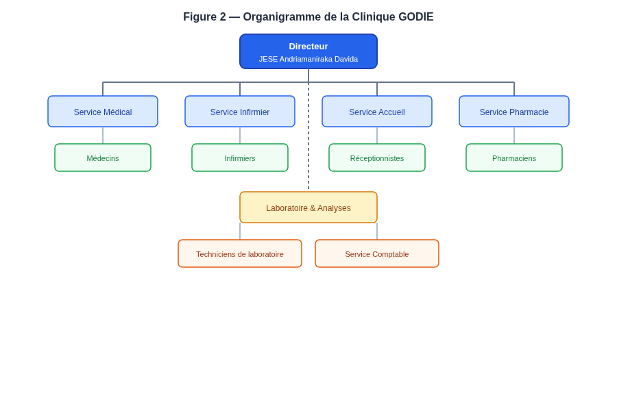
La structure organisationnelle de la clinique se compose des entités suivantes :
- Direction : assurée par JESE Andriamaniraka Davida, elle définit la stratégie générale, supervise l'ensemble des services et prend les décisions opérationnelles majeures.
- Service médical : regroupe les médecins de différentes spécialités (cardiologie, pédiatrie, neurologie, gynécologie, dermatologie, orthopédie) qui assurent les consultations externes et le suivi des patients hospitalisés.
- Service infirmier : composé des infirmiers et aides-soignants qui assurent les soins aux patients hospitalisés, la préparation des traitements et le suivi médical quotidien.
- Service d'accueil : géré par les réceptionnistes, il assure l'enregistrement des patients, la prise de rendez-vous et l'orientation des visiteurs.
- Service pharmaceutique : assuré par les pharmaciens, il gère la dispensation des médicaments, le suivi des stocks et les relations avec les fournisseurs.
- Service de laboratoire : composé de techniciens de laboratoire, il réalise les analyses médicales et produit les résultats d'examens.
- Service comptable : assure la facturation, le suivi des paiements, la gestion des assurances et la comptabilité générale de l'établissement.
1.4 Services offerts
La Clinique GODIE propose une gamme étendue de services médicaux et paramédicaux destinés à couvrir l'ensemble du parcours de soins du patient :
- Consultations externes : la clinique dispose de médecins spécialistes couvrant plusieurs disciplines — cardiologie, pédiatrie, neurologie, gynécologie, dermatologie et orthopédie. Les consultations externes constituent le point d'entrée principal du parcours de soins.
- Hospitalisation : la clinique dispose de chambres et de lits d'hospitalisation permettant l'accueil des patients nécessitant une surveillance médicale prolongée. Les chambres sont classées par type (standard, privée, urgence) et par étage.
- Laboratoire d'analyses médicales : le laboratoire interne permet de réaliser une variété d'analyses (biologie, hématologie, biochimie) avec des délais de résultat variables selon le type d'examen.
- Pharmacie : la pharmacie de la clinique assure la dispensation des médicaments prescrits, le suivi des stocks et la gestion des dates de péremption.
- Service d'urgences : le service des urgences prend en charge les cas médicaux nécessitant une intervention immédiate, avec un système de triage par niveau de gravité.
- Service d'ambulance : la clinique dispose d'ambulances pour le transport sanitaire des patients, avec un suivi de leur disponibilité.
L'ensemble de ces services fonctionne de manière coordonnée pour assurer un parcours de soins continu et de qualité au patient. Depuis l'accueil et l'enregistrement, en passant par la consultation, les examens laboratoires, l'hospitalisation éventuelle et la facturation, chaque étape du parcours est aujourd'hui documentée mais de manière dispersée et non interconnectée. L'application proposée a pour vocation de fluidifier ce parcours en centralisant toutes les étapes dans un système unique.
1.5 Motivation du projet
Face à la croissance de son activité et à la diversité de ses services, la Clinique GODIE ressent de manière croissante le besoin de disposer d'un système d'information unifié, moderne et fiable. Plusieurs facteurs motivent cette démarche :
Premièrement, l'augmentation du nombre de patients rend la gestion manuelle des dossiers de plus en plus difficile et sujette aux erreurs. La recherche d'un dossier patient dans des registres papier peut prendre un temps considérable, et les risques de perte ou de duplication sont réels.
Deuxièmement, la coordination entre les différents services (accueil, médical, infirmier, pharmacie, laboratoire, comptable) nécessite un flux d'informations fluide et traçable, ce que les outils actuels (communications orales, fichiers Excel dispersés) ne permettent pas de garantir.
Troisièmement, la production de rapports statistiques et de tableaux de bord pour le pilotage de la clinique est devenue indispensable pour une gestion moderne et efficiente. Or, avec les outils actuels, cette production est lente, partielle et parfois inexacte.
L'objectif est donc de remplacer les procédés manuels par une application web centralisée, accessible depuis n'importe quel poste informatique de la clinique, évolutive et capable de s'adapter aux besoins futurs de l'établissement.
Il convient également de mentionner que ce projet s'inscrit dans un cadre académique : il constitue un mémoire de fin d'études en vue de l'obtention du diplôme de Licence Professionnelle Informatique à l'Université d'Antsiranana. À ce titre, il doit non seulement répondre à un besoin réel identifié auprès de la Clinique GODIE, mais également démontrer la maîtrise des compétences acquises durant le cursus universitaire : analyse de besoins, conception de systèmes, modélisation UML, programmation web, gestion de base de données, et rédaction de documentation technique. Le projet doit également être présenté et défendu devant un jury universitaire, ce qui impose un niveau de qualité et de finition professionnel.
CHAPITRE II — ANALYSE DE L'EXISTANT
2.1 Méthodes de travail actuelles
L'analyse du système d'information actuel de la Clinique GODIE a été réalisée par observation directe et par des entretiens avec le personnel. Cette analyse révèle que la gestion s'effectue au moyen de plusieurs outils et procédés distincts, sans intégration entre eux :
- Registres papier : les patients sont enregistrés dans des registres manuels à l'accueil. Les rendez-vous sont notés dans un cahier de planning. Les informations médicales (consultations, diagnostics, traitements) sont consignées dans des dossiers physiques par médecin.
- Fichiers Excel dispersés : certains services utilisent des tableurs Excel pour le suivi des consultations, des médicaments en stock et des factures. Cependant, ces fichiers ne sont pas interconnectés et résident sur des ordinateurs différents, sans synchronisation.
- Communications orales : la coordination entre services (par exemple, entre l'accueil et le service médical, ou entre la pharmacie et le service infirmier) se fait principalement par communication orale directe, sans traçabilité.
- Factures manuelles : les factures sont établies manuellement, au cas par cas, sans système de suivi automatisé des paiements ou des assurances.
- Absence de sauvegarde : aucune procédure de sauvegarde automatique n'est en place. Les données papier sont vulnérables aux dégradations physiques, et les fichiers Excel ne sont pas systématiquement sauvegardés.
2.2 Limites du système actuel
Le système actuel présente plusieurs limites significatives qui entravent l'efficacité de la clinique et la qualité du service rendu :
| Limite | Conséquence opérationnelle |
|---|---|
| Saisie manuelle répétitive | Risque d'erreurs de transcription, de doublons et de données incohérentes entre les différents supports |
| Données dispersées | Difficulté de consolidation des informations pour produire des rapports globaux ou des statistiques fiables |
| Absence de traçabilité | Perte de l'historique des actions, impossibilité de savoir qui a fait quoi et quand |
| Pas d'accès distant | Impossibilité de consulter les données depuis un autre poste ou à distance, limitant la flexibilité |
| Pas de sauvegarde automatique | Risque de perte de données en cas d'incident physique (incendie, inondation, dégradation) |
| Pas de statistiques en temps réel | Pilotage de la clinique difficile, décisions prises sans visibilité sur les indicateurs clés |
| Recherche difficile | Retrouver un dossier patient précis dans les registres papier prend un temps considérable |
| Risque de perte de confidentialité | Les dossiers papier sont accessibles à toute personne ayant accès physique au local, sans contrôle d'accès individualisé |
Ces limites ont un impact direct sur la qualité du service rendu aux patients, sur la productivité du personnel et sur la capacité de la direction à piloter l'établissement de manière éclairée. Elles rendent également difficile toute démarche d'accréditation ou de certification de qualité, qui requiert une traçabilité rigoureuse des processus.
Il convient également de noter que ces limites s'aggravent avec la croissance de l'activité de la clinique. Plus le nombre de patients augmente, plus les registres papier deviennent volumineux et difficiles à manipuler. Plus le nombre de consultations croît, plus les fichiers Excel dispersés deviennent complexes à consolider. La situation actuelle, bien que tolérable à petite échelle, deviendra rapidement ingérable si aucune action n'est entreprise. La digitalisation n'est donc pas seulement une amélioration souhaitable, c'est une nécessité stratégique pour accompagner la croissance de l'établissement.
Par ailleurs, les normes et standards internationaux en matière de gestion des données de santé évoluent rapidement. La confidentialité des données médicales, la traçabilité des prescriptions et la sécurité des informations personnelles sont des exigences de plus en plus strictes. Les procédés manuels actuels ne permettent pas de répondre à ces exigences de manière satisfaisante, tandis qu'une application web sécurisée offrirait les garanties nécessaires.
2.3 Propositions de solutions
Pour pallier les limites identifiées ci-dessus, nous proposons la mise en place d'une application web unique et centralisée offrant les fonctionnalités suivantes :
- Une base de données centralisée : toutes les informations (patients, personnel, rendez-vous, consultations, médicaments, factures, etc.) seront stockées dans un emplacement unique, éliminant la dispersion et les doublons.
- Un accès multi-postes : l'application étant accessible via un navigateur web, plusieurs utilisateurs pourront y accéder simultanément depuis différents postes de la clinique.
- Des modules intégrés couvrant l'ensemble des processus métier, de l'accueil du patient jusqu'à la facturation, en passant par les consultations, le laboratoire, la pharmacie et les urgences.
- Des exports au format PDF, Excel (CSV) et par impression, pour faciliter la production de documents officiels (ordonnances, factures, rapports).
- Un tableau de bord avec statistiques en temps réel et graphiques interactifs, permettant à la direction de suivre l'activité de la clinique en un coup d'œil.
- Un journal des activités pour la traçabilité des actions effectuées dans le système, avec horodatage et identification de l'utilisateur.
- Un système de sauvegarde et restauration permettant d'exporter l'ensemble des données en un fichier JSON et de les restaurer en cas de besoin.
Cette solution apporterait une réponse globale et cohérente aux défis actuels de la Clinique GODIE, tout en posant les bases d'une infrastructure informatique évolutive, capable de s'adapter aux besoins futurs de l'établissement.
Il est important de souligner que la solution proposée ne nécessite pas d'investissement matériel important : les postes informatiques existants dans la clinique suffisent pour accéder à l'application via un simple navigateur web. L'application ne nécessite pas non plus de serveur dédié dans sa version actuelle, puisque les données sont stockées dans le navigateur. Cette légèreté d'implémentation est un atout majeur dans le contexte malgache, où les ressources informatiques sont souvent limitées.
CHAPITRE III — ÉTUDE DES BESOINS
3.1 Identification des acteurs
L'analyse des besoins commence par l'identification des acteurs du système, c'est-à-dire des personnes ou entités qui interagiront avec l'application. Chaque acteur a un rôle spécifique et des droits d'accès différents selon ses fonctions au sein de la clinique.
Tableau 1 — Acteurs du système
| Acteur | Description | Modules accessibles |
|---|---|---|
| Administrateur | Accès complet à tous les modules, gestion des paramètres, des utilisateurs et des rôles | Tous les modules |
| Médecin | Consulte les patients, crée les consultations et ordonnances, gère les hospitalisations | Patients, Consultations, Ordonnances, Hospitalisations, RDV |
| Infirmier | Accède aux patients hospitalisés, assure le suivi des soins | Patients, Hospitalisations, Lits |
| Réceptionniste | Enregistre les patients, gère les rendez-vous et l'accueil | Patients, RDV |
| Pharmacien | Gère les médicaments, le stock et les fournisseurs | Médicaments, Stock, Fournisseurs |
| Technicien de laboratoire | Gère les laboratoires, les analyses et les résultats | Laboratoires, Analyses, Résultats |
| Comptable | Gère les factures, les paiements et les assurances | Factures, Paiements, Assurances |
Chaque acteur interagit avec le système selon son rôle et ses responsabilités. L'administrateur est l'acteur le plus privilégié : il a accès à tous les modules, y compris la gestion des utilisateurs, des rôles et des paramètres du système. Le médecin est l'acteur principal du processus de soins : il consulte les patients, pose des diagnostics, établit des ordonnances et gère les hospitalisations. Le réceptionniste est le premier point de contact du patient avec le système : il enregistre les patients et gère les rendez-vous. Le pharmacien gère le circuit du médicament, de l'approvisionnement à la dispensation. Le technicien de laboratoire réalise les analyses et communique les résultats. Le comptable gère les aspects financiers : facturation, paiements et relations avec les assurances.
Cette répartition des rôles et des permissions implémente le principe du moindre privilège : chaque utilisateur n'a accès qu'aux modules et aux actions nécessaires à sa fonction, réduisant les risques d'erreurs et de compromission de données.
3.2 Besoins fonctionnels
Les besoins fonctionnels décrivent les fonctionnalités que l'application doit offrir à ses utilisateurs. Ils ont été identifiés à partir de l'analyse de l'existant et des entretiens avec le personnel de la clinique.
Tableau 2 — Besoins fonctionnels
| Code | Besoin fonctionnel | Priorité |
|---|---|---|
| BF-01 | Gérer les patients (créer, lire, modifier, supprimer) | Haute |
| BF-02 | Gérer les médecins (CRUD) | Haute |
| BF-03 | Gérer le personnel (CRUD) | Moyenne |
| BF-04 | Gérer les infirmiers (CRUD) | Moyenne |
| BF-05 | Gérer les rendez-vous (CRUD + calendrier interactif) | Haute |
| BF-06 | Gérer les consultations (CRUD + ordonnance intégrée) | Haute |
| BF-07 | Gérer les ordonnances (CRUD) | Haute |
| BF-08 | Gérer les hospitalisations (CRUD) | Haute |
| BF-09 | Gérer les chambres et les lits (CRUD + statut) | Moyenne |
| BF-10 | Gérer les laboratoires et analyses (CRUD) | Moyenne |
| BF-11 | Gérer les résultats d'analyses (CRUD) | Moyenne |
| BF-12 | Gérer les médicaments et le stock (CRUD + alertes de stock faible) | Haute |
| BF-13 | Gérer les fournisseurs (CRUD) | Moyenne |
| BF-14 | Gérer les factures et paiements (CRUD) | Haute |
| BF-15 | Gérer les assurances (CRUD) | Moyenne |
| BF-16 | Gérer les services et spécialités (CRUD) | Basse |
| BF-17 | Gérer les urgences et ambulances (CRUD) | Moyenne |
| BF-18 | Gérer les utilisateurs et rôles (CRUD + permissions) | Haute |
| BF-19 | Afficher un tableau de bord avec statistiques et graphiques | Haute |
| BF-20 | Générer des rapports (PDF, Excel, impression) | Haute |
| BF-21 | Sauvegarder et restaurer les données (export/import JSON) | Haute |
| BF-22 | Journaliser les activités (traçabilité des actions) | Moyenne |
Ces vingt-deux besoins fonctionnels couvrent l'ensemble du périmètre fonctionnel de la clinique, depuis l'enregistrement d'un patient jusqu'à la facturation et la gestion des urgences. Chaque besoin correspond à un module de l'application, et chaque module implémente les quatre opérations CRUD (Créer, Lire, Modifier, Supprimer) ainsi que des fonctionnalités spécifiques (recherche, filtres, exports, alertes). La priorité de chaque besoin a été définie en concertation avec la direction de la clinique : les besoins de priorité « haute » sont ceux qui sont essentiels au fonctionnement de la clinique (patients, rendez-vous, consultations, facturation), tandis que les besoins de priorité « moyenne » ou « basse » concernent des modules complémentaires mais utiles.
3.3 Besoins non fonctionnels
Les besoins non fonctionnels décrivent les contraintes et les qualités que l'application doit respecter, indépendamment des fonctionnalités spécifiques. Ils concernent l'ergonomie, les performances, la sécurité et la maintenabilité du système.
Tableau 3 — Besoins non fonctionnels
| Code | Besoin non fonctionnel |
|---|---|
| BNF-01 | Interface responsive adaptée aux ordinateurs, tablettes et téléphones |
| BNF-02 | Mode clair et mode sombre pour le confort visuel des utilisateurs |
| BNF-03 | Temps de réponse inférieur à 1 seconde pour toutes les opérations |
| BNF-04 | Validation des formulaires côté client avec messages d'erreur clairs |
| BNF-05 | Notifications de succès et d'erreur pour chaque action utilisateur |
| BNF-06 | Confirmation obligatoire avant toute suppression irréversible |
| BNF-07 | Code maintenable, modulaire et typé (TypeScript strict) |
| BNF-08 | Accessibilité : contraste suffisant, navigation clavier, lisibilité |
| BNF-09 | Démarrage sur base de données vide, sans données de démonstration |
| BNF-10 | Auto-incrémentation des identifiants à partir de 1 |
3.4 Règles de gestion
Les règles de gestion définissent les contraintes métier que l'application doit respecter. Elles guident l'implémentation et garantissent la cohérence des données.
Tableau 4 — Règles de gestion métier
| Règle | Description |
|---|---|
| RG-01 | L'identifiant de chaque enregistrement est auto-incrémenté à partir de 1 et est unique |
| RG-02 | La suppression d'un enregistrement est précédée d'une boîte de dialogue de confirmation |
| RG-03 | Les champs obligatoires sont validés avant la soumission du formulaire |
| RG-04 | Le statut d'un rendez-vous peut être : « en attente », « confirmé » ou « annulé » |
| RG-05 | Le statut d'un lit peut être : « libre », « occupé » ou « maintenance » |
| RG-06 | Le statut d'une hospitalisation peut être : « en cours » ou « sorti » |
| RG-07 | Une alerte de stock faible s'affiche lorsque la quantité d'un médicament est inférieure ou égale au seuil minimum |
| RG-08 | La base de données démarre vide à l'installation, sans aucune donnée préchargée |
| RG-09 | La réinitialisation de la base efface toutes les données et remet les compteurs d'identifiants à 1 |
| RG-10 | Chaque consultation est liée à un patient et à un médecin obligatoirement |
| RG-11 | Chaque hospitalisation est liée à un patient, un lit et un médecin obligatoirement |
| RG-12 | Chaque résultat d'analyse est lié à une analyse et à un patient obligatoirement |
CHAPITRE IV — CONCEPTION UML
4.1 Diagramme de cas d\'utilisation
Le diagramme de cas d\'utilisation modélise les interactions entre les acteurs du système et les fonctionnalités offertes par l\'application. Il permet de visualiser, de manière intuitive, qui peut faire quoi dans le système. Ce diagramme a été élaboré à partir de l\'analyse des besoins fonctionnels décrits au chapitre précédent.
Le diagramme de cas d\'utilisation constitue la première étape de la conception orientée objet. Il s\'agit d\'une représentation graphique qui décrit les interactions entre les utilisateurs (acteurs) et le système, sans se préoccuper de l\'implémentation technique. Chaque cas d\'utilisation (use case) représente une fonctionnalité complète du point de vue de l\'utilisateur.
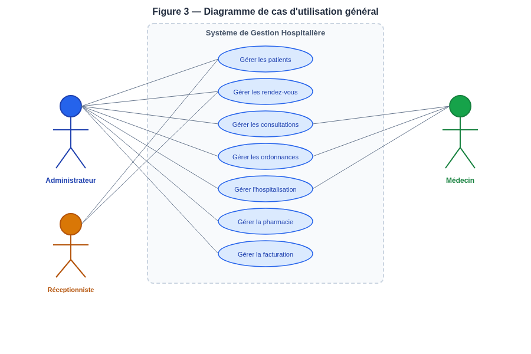
Le diagramme général (Figure 3) présente les principaux cas d\'utilisation accessibles aux acteurs. L\'administrateur dispose d\'un accès complet à tous les modules, y compris la gestion des paramètres, des utilisateurs et des rôles. Le médecin accède aux patients, aux consultations, aux ordonnances et aux hospitalisations. Le réceptionniste gère l\'accueil des patients et les rendez-vous. Le pharmacien gère les médicaments, le stock et les fournisseurs. Le technicien de laboratoire gère les analyses et les résultats. Le comptable gère les factures et les paiements.
Pour illustrer le niveau de détail de la modélisation, nous présentons ci-dessous le diagramme de cas d\'utilisation spécifique au module de gestion des patients. Ce diagramme détaille les opérations CRUD (Créer, Lire, Modifier, Supprimer) ainsi que les fonctionnalités de recherche et d\'export disponibles pour ce module.
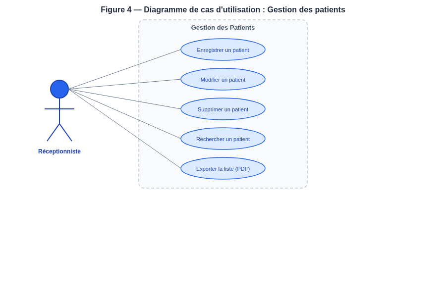
Le réceptionniste peut enregistrer un nouveau patient, modifier les informations d\'un patient existant, supprimer un patient (avec confirmation), rechercher un patient par nom ou par téléphone, et exporter la liste des patients au format PDF ou Excel. Ces cas d\'utilisation couvrent l\'intégralité du cycle de vie d\'un dossier patient dans le système.
4.2 Diagramme de classes
Le diagramme de classes décrit la structure statique du système en identifiant les entités principales (classes), leurs attributs, leurs méthodes et les relations qui les unissent. Il constitue le squelette du modèle objet de l\'application et sert de référence pour l\'implémentation. Chaque classe correspond à une entité du domaine métier identifiée lors de l\'analyse des besoins.
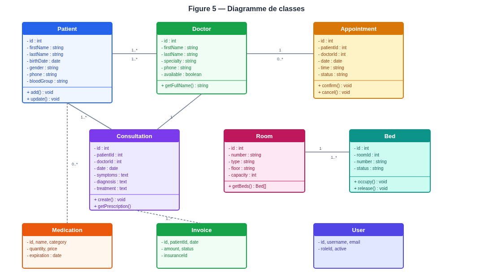
Les principales classes du système sont les suivantes :
- Patient : contient les informations personnelles et médicales du patient (identifiant, prénom, nom, date de naissance, sexe, téléphone, adresse, groupe sanguin, email, notes médicales). Cette classe est centrale car elle est référencée par de nombreuses autres classes.
- Doctor : représente un médecin avec sa spécialité, ses coordonnées, sa disponibilité et ses horaires de travail. Un médecin peut avoir plusieurs rendez-vous et réaliser plusieurs consultations.
- Staff : modélise le personnel administratif et technique de la clinique, avec sa fonction et son service d\'affectation.
- Nurse : représente un infirmier avec son service d\'affectation et son quart de travail (jour, nuit, garde).
- Appointment : modélise un rendez-vous avec ses relations vers le patient et le médecin, la date, l\'heure, le motif et le statut. Le statut peut évoluer de « en attente » à « confirmé » ou « annulé ».
- Consultation : représente une consultation médicale avec les symptômes, le diagnostic, le traitement, l\'ordonnance et les notes. Chaque consultation est liée à un patient et à un médecin.
- Prescription : modélise une ordonnance avec les médicaments prescrits et les relations patient/médecin.
- Hospitalization : représente une hospitalisation avec les dates d\'admission et de sortie, le motif, le statut et les relations vers le patient, le lit et le médecin responsable.
- Room et Bed : modélisent l\'infrastructure d\'hospitalisation (chambres et lits) avec leurs statuts. Une chambre contient plusieurs lits, et chaque lit peut être occupé par au plus une hospitalisation à la fois.
- Laboratory, Analysis et Result : modélisent le laboratoire d\'analyses médicales. Un laboratoire propose plusieurs analyses, et chaque analyse peut produire plusieurs résultats pour différents patients.
- Medication, Supplier et Stock : modélisent la pharmacie et la gestion des stocks. Un médicament est fourni par un fournisseur, et son stock est suivi avec un seuil minimum déclenchant une alerte.
- Invoice, Payment et Insurance : modélisent la facturation et les aspects financiers. Une facture est émise pour un patient, peut être liée à une assurance, et est réglée par un ou plusieurs paiements.
- Emergency et Ambulance : modélisent les urgences et le transport sanitaire.
- User, Role et ActivityLog : modélisent la sécurité et la traçabilité. Un utilisateur a un rôle qui détermine ses permissions, et chaque action est journalisée dans le journal des activités.
Les relations entre les classes sont de trois types : les associations simples (un patient a plusieurs rendez-vous), les agrégations (une chambre contient plusieurs lits) et les associations qualifiées (une consultation est réalisée par un médecin pour un patient). Les cardinalités précisent le nombre minimum et maximum d\'occurrences participant à chaque relation. Par exemple, la relation entre Patient et Consultation a une cardinalité de 1..N côté patient (un patient peut avoir plusieurs consultations) et N..1 côté consultation (une consultation concerne un seul patient).
4.3 Diagrammes de séquence
Les diagrammes de séquence décrivent l\'ordre temporel des messages échangés entre les objets du système lors de l\'exécution d\'un cas d\'utilisation. Ils permettent de visualiser le déroulement dynamique des interactions et de vérifier la cohérence du modèle objet. Contrairement au diagramme de classes qui montre la structure statique, le diagramme de séquence montre le comportement dynamique du système.
4.3.1 Prise de rendez-vous
Le diagramme de séquence de la prise de rendez-vous (Figure 6) illustre le processus complet, depuis l\'ouverture du formulaire par le réceptionniste jusqu\'à la confirmation de l\'enregistrement. Trois acteurs participent à cette interaction : le réceptionniste (utilisateur), l\'interface (composants React) et le store (couche de persistance).
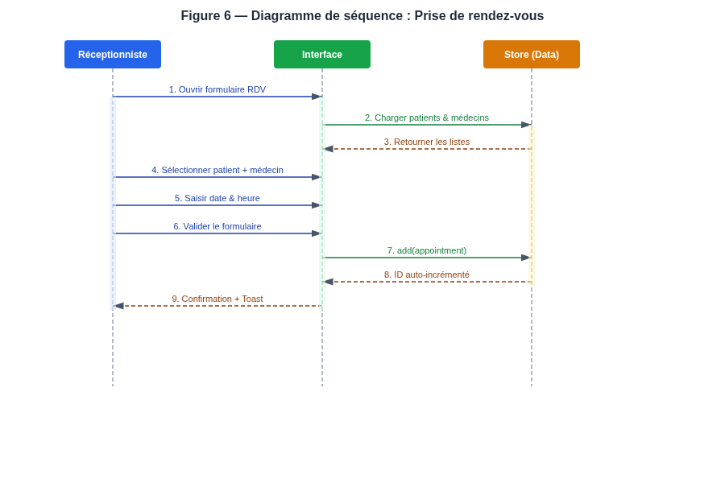
Le processus se déroule en neuf étapes successives. Premièrement, le réceptionniste ouvre le formulaire de rendez-vous en cliquant sur le bouton « Ajouter ». Deuxièmement, l\'interface demande au store de charger les listes de patients et de médecins disponibles. Troisièmement, le store retourne les listes demandées. Quatrièmement, le réceptionniste sélectionne un patient et un médecin dans les listes déroulantes. Cinquièmement, il saisit la date et l\'heure du rendez-vous, ainsi que le motif. Sixièmement, il valide le formulaire. Septièmement, l\'interface transmet les données au store qui procède à l\'enregistrement. Huitièmement, le store génère un identifiant auto-incrémenté et persiste le nouvel enregistrement dans le localStorage. Neuvièmement, l\'interface affiche une notification de succès (toast) confirmant que le rendez-vous a été créé.
4.3.2 Création d\'une consultation
Le diagramme de séquence de la création d\'une consultation (Figure 7) illustre le processus de saisie d\'un dossier médical par le médecin. Ce processus, plus complexe que la prise de rendez-vous, comprend onze étapes et implique la saisie de données médicales détaillées.
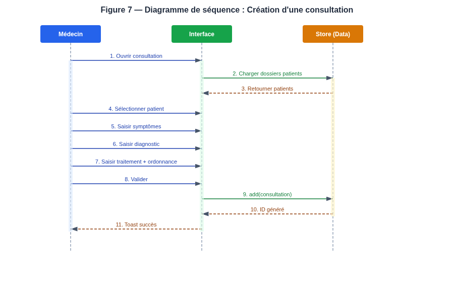
Le médecin ouvre le module consultations, charge les dossiers patients, sélectionne un patient, saisit les symptômes, le diagnostic, le traitement et l\'ordonnance, puis valide. Le store enregistre la consultation avec un identifiant auto-incrémenté et l\'interface affiche une notification de succès. Ce processus illustre l\'interaction entre le médecin (acteur principal), l\'interface (couche de présentation) et le store (couche de persistance), conformément à l\'architecture en trois couches décrite au chapitre VI.
4.4 Diagramme d\'activité
Le diagramme d\'activité représente le flux d\'actions et de décisions lors de la création d\'une consultation médicale. Il met en évidence les points de décision (validation des champs) et les branches alternatives (affichage des erreurs en cas de saisie invalide). Ce diagramme complète les diagrammes de séquence en offrant une vue orientée processus plutôt qu\'orientée interactions.
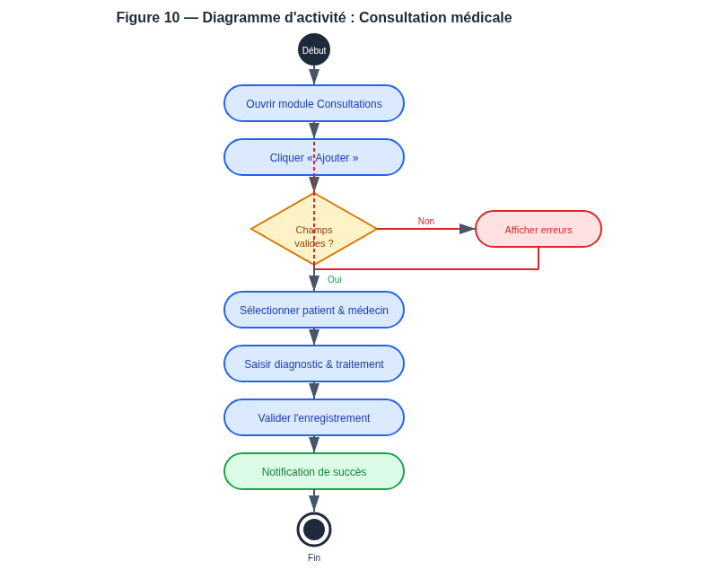
Le processus commence par l\'ouverture du module consultations. L\'utilisateur clique sur le bouton « Ajouter », ce qui déclenche l\'affichage du formulaire. Le système vérifie la validité des champs saisis : si les champs sont invalides, les erreurs sont affichées et l\'utilisateur doit corriger sa saisie ; si les champs sont valides, l\'utilisateur sélectionne un patient et un médecin, saisit le diagnostic et le traitement, puis valide l\'enregistrement. Le système affiche alors une notification de succès et le processus se termine.
4.5 Modèle conceptuel de données
Le Modèle Conceptuel de Données (MCD) décrit la structure de la base de données au niveau conceptuel, indépendamment de toute considération technique. Il identifie les entités, leurs propriétés et les associations qui les relient, avec leurs cardinalités. Le MCD suit la méthode Merise, largement utilisée dans la conception de systèmes d\'information en France et dans les pays francophones, dont Madagascar.
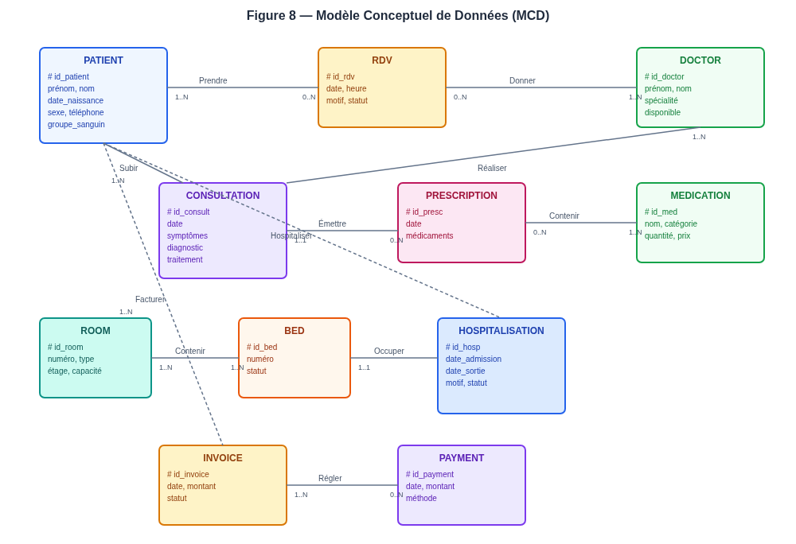
Le MCD identifie les entités principales suivantes : PATIENT, DOCTOR, RDV (rendez-vous), CONSULTATION, PRESCRIPTION, ROOM, BED, HOSPITALISATION, MEDICATION, INVOICE et PAYMENT. Les associations entre ces entités sont les suivantes :
- Un PATIENT peut prendre plusieurs RDV (cardinalité 1..N côté patient, 0..N côté RDV) — un patient peut avoir plusieurs rendez-vous, et un rendez-vous concerne un seul patient.
- Un DOCTOR donne plusieurs RDV (cardinalité 1..N côté médecin, 0..N côté RDV) — un médecin peut avoir plusieurs rendez-vous, et un rendez-vous est attribué à un seul médecin.
- Un PATIENT subit plusieurs CONSULTATIONS (cardinalité 1..N) — un patient peut avoir plusieurs consultations au fil du temps.
- Un DOCTOR réalise plusieurs CONSULTATIONS (cardinalité 1..N) — un médecin peut réaliser plusieurs consultations.
- Une CONSULTATION émet zéro ou plusieurs PRESCRIPTIONS (cardinalité 1..1 côté consultation, 0..N côté prescription) — une consultation peut générer une ordonnance.
- Une ROOM contient plusieurs BEDs (cardinalité 1..N côté chambre, 1..N côté lit) — une chambre contient plusieurs lits.
- Un BED est occupé par au plus une HOSPITALISATION (cardinalité 1..1 côté lit, 0..N côté hospitalisation) — un lit peut être occupé par une hospitalisation à la fois.
- Un PATIENT peut être hospitalisé plusieurs fois (cardinalité 1..N côté hospitalisation) — un patient peut avoir plusieurs hospitalisations au cours du temps.
- Une PRESCRIPTION contient plusieurs MEDICATIONs (cardinalité 0..N côté prescription, 1..N côté médicament) — une ordonnance peut prescrire plusieurs médicaments.
- Un PATIENT reçoit plusieurs INVOICEs (cardinalité 1..N côté facture) — un patient peut recevoir plusieurs factures.
- Une INVOICE est réglée par plusieurs PAYMENTs (cardinalité 1..N côté paiement, 0..N côté facture) — une facture peut être payée en plusieurs fois.
4.6 Modèle logique de données
Le Modèle Logique de Données (MLD) est obtenu par transformation du MCD selon les règles de passage de la méthode Merise. Chaque entité devient une relation (table), les associations de type « un-à-plusieurs » sont résolues par l\'ajout de clés étrangères dans la table du côté « plusieurs », et les associations de type « plusieurs-à-plusieurs » deviennent des tables de liaison. Cette transformation assure la cohérence et l\'intégrité des données.
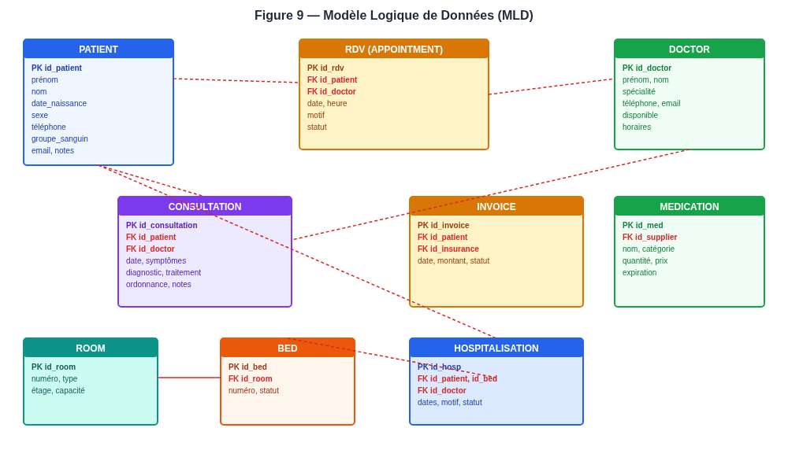
Le MLD comprend les relations suivantes, avec leurs clés primaires (PK) et clés étrangères (FK) :
- PATIENT (PK : id_patient) — prénom, nom, date_naissance, sexe, téléphone, adresse, groupe_sanguin, email, notes, created_at
- DOCTOR (PK : id_doctor) — prénom, nom, spécialité, téléphone, email, disponible, horaires, created_at
- RDV (PK : id_rdv, FK : id_patient, id_doctor) — date, heure, motif, statut, created_at
- CONSULTATION (PK : id_consultation, FK : id_patient, id_doctor) — date, symptômes, diagnostic, traitement, ordonnance, notes, created_at
- PRESCRIPTION (PK : id_presc, FK : id_patient, id_doctor) — date, médicaments, notes, created_at
- ROOM (PK : id_room) — numéro, type, étage, capacité, created_at
- BED (PK : id_bed, FK : id_room) — numéro, statut, created_at
- HOSPITALISATION (PK : id_hosp, FK : id_patient, id_bed, id_doctor) — date_admission, date_sortie, motif, statut, created_at
- Laboratory, Analysis, Result, Medication, Supplier, Stock, Invoice, Payment, Insurance, Emergency, Ambulance, User, Role, ActivityLog — suivant le même schéma de clé primaire et clés étrangères.
Chaque relation dispose d\'un champ created_at pour la traçabilité temporelle des enregistrements. Les clés étrangères garantissent l\'intégrité référentielle entre les tables : il est impossible de créer une consultation sans patient ni médecin, ou une hospitalisation sans lit. Cette contrainte est implémentée au niveau de l\'interface utilisateur par la validation des formulaires (champs obligatoires) et au niveau du store par la résolution des références.
CHAPITRE V — CHOIX TECHNOLOGIQUES
5.1 Frontend
Le choix des technologies pour le frontend de l\'application a été guidé par plusieurs critères : la maturité de l\'écosystème, la performance, la maintenabilité du code, la disponibilité de la documentation et la courbe d\'apprentissage. Après une analyse comparative des options disponibles (Angular, Vue.js, React, Svelte), les technologies suivantes ont été retenues :
Tableau 5 — Choix technologiques
| Technologie | Rôle | Justification du choix |
|---|---|---|
| React 18 | Bibliothèque UI | Composants réutilisables, écosystème mature, performance optimisée, large communauté, documentation abondante |
| TypeScript | Langage | Typage statique, détection d\'erreurs à la compilation, autocomplétion améliorée, refactoring sûr, lisibilité du code |
| Vite 5 | Build tool | Démarrage quasi instantané, Hot Module Replacement ultra-rapide, build de production optimisé, configuration simple |
| Tailwind CSS 3 | Framework CSS | Design system utilitaire, responsive natif, mode sombre intégré, personnalisation facile, pas de CSS superflu |
| Chart.js | Graphiques | Visualisations interactives, types de graphiques variés (courbes, barres, camemberts), légendes intégrées, responsive |
| react-chartjs-2 | Wrapper React | Intégration native de Chart.js dans l\'écosystème React, API déclarative, gestion du cycle de vie |
| jsPDF | Génération PDF | Génération de documents PDF côté client, pas de dépendance serveur, personnalisation des contenus |
| qrcode.react | QR Code | Génération de QR codes pour l\'identification des patients, rendu SVG, léger |
| lucide-react | Icônes | Bibliothèque d\'icônes moderne, cohérente, légère, arbre-shakeable, style unifié |
| react-router-dom 7 | Routage | Navigation entre pages (SPA), routes paramétrées, navigation programmatique, gestion du scroll |
Le couple React + TypeScript a été privilégié pour plusieurs raisons. React est aujourd\'hui la bibliothèque UI la plus utilisée au monde, avec un écosystème extrêmement riche et une communauté active. Son modèle de composants fonctionnels avec hooks permet une organisation claire du code et une réutilisation maximale. TypeScript apporte le typage statique, qui détecte de nombreuses erreurs à la compilation et améliore considérablement la maintenabilité et la lisibilité du code, particulièrement dans un projet de cette envergure avec une trentaine de modules.
Vite a été choisi comme build tool pour sa rapidité exceptionnelle : le serveur de développement démarre en moins d\'une seconde et le Hot Module Replacement est quasi instantané, ce qui améliore considérablement la productivité du développeur. Le build de production est optimisé avec code-splitting automatique et tree-shaking, réduisant la taille du bundle final.
Tailwind CSS a été retenu pour son approche « utility-first » qui permet de construire des interfaces cohérentes et responsive sans écrire de CSS personnalisé. Le mode sombre est intégré nativement, et la personnalisation du thème (couleurs, polices, espacements) se fait via un fichier de configuration unique. Cette approche garantit une cohérence visuelle parfaite à travers toute l\'application.
Chart.js et son wrapper react-chartjs-2 ont été choisis pour les visualisations graphiques du tableau de bord. Cette bibliothèque offre une grande variété de types de graphiques (courbes, barres, camemberts, donuts) avec des options de personnalisation riches, des animations fluides et un comportement responsive. Elle est légère et performante, ce qui la rend idéale pour un tableau de bord de pilotage.
jsPDF est utilisé pour la génération de documents PDF côté client, sans dépendance serveur. Cette bibliothèque permet de créer des documents PDF personnalisés avec du texte, des tableaux et des images, directement dans le navigateur. Elle est utilisée pour l\'export des ordonnances, des factures et des rapports.
5.2 Persistance des données
La persistance des données est assurée par le localStorage du navigateur. Ce choix a été motivé par plusieurs considérations :
- Autonomie : l\'application fonctionne sans dépendance serveur, ce qui la rend immédiatement démontrable sans infrastructure backend. Cette caractéristique est particulièrement importante dans le contexte d\'un mémoire de Licence, où l\'objectif est de démontrer le fonctionnement de l\'application sans nécessiter un déploiement serveur complexe.
- Simplicité : le localStorage est une API native du navigateur, ne nécessitant aucune installation ni configuration. Les données sont stockées sous forme de chaînes JSON, ce qui simplifie la sérialisation et la désérialisation.
- Persistance : les données survivent aux rechargements de page et à la fermeture du navigateur. L\'utilisateur peut fermer l\'application et la rouvrir en retrouvant toutes ses données intactes.
- Adaptabilité : l\'architecture en couches permet de remplacer facilement le localStorage par une API REST (PostgreSQL/MongoDB) en production, sans modifier les composants de l\'interface. Il suffirait de modifier le hook useCollection pour qu\'il effectue des requêtes HTTP au lieu d\'accéder au localStorage.
Chaque collection utilise un compteur d\'auto-incrément persistant (stocké sous la clé <collection>__seq) pour garantir des identifiants uniques commençant à 1. Les enregistrements sont sérialisés en JSON et stockés sous la clé correspondant au nom de la collection. Cette approche garantit que la base de données démarre vide à l\'installation, conformément à l\'exigence BNF-09.
La page Paramètres offre également des fonctions d\'export et d\'import de sauvegarde complète au format JSON, permettant de transférer les données entre postes ou de les archiver. Cette fonctionnalité est essentielle pour la résilience des données en l\'absence d\'un backend serveur.
5.3 Justification globale
Le choix d\'une architecture dite « config-driven » (pilotée par la configuration) constitue la décision architecturale la plus structurante de ce projet. Au lieu de développer une page CRUD distincte pour chaque module — ce qui aurait nécessité la création de trente pages avec un code largement répétitif — nous avons conçu un framework générique qui génère automatiquement l\'ensemble de l\'interface à partir d\'un registre de configuration.
Cette approche présente plusieurs avantages majeurs :
- Productivité : l\'ajout d\'un nouveau module se résume à la définition de quelques lignes de configuration dans le registre des ressources, sans écrire de nouveau composant. Cette approche a permis de couvrir vingt-neuf modules avec un seul composant CRUD générique.
- Cohérence : tous les modules partagent exactement la même interface, les mêmes comportements et le même design, garantissant une expérience utilisateur homogène. L\'utilisateur qui maîtrise un module maîtrise automatiquement tous les autres.
- Maintenabilité : une correction de bug ou une amélioration dans le framework CRUD se propage automatiquement à tous les modules. Il n\'est pas nécessaire de modifier trente pages individuelles.
- Évolutivité : l\'ajout de nouveaux modules à l\'avenir est trivial et ne nécessite pas de développement supplémentaire. Il suffit d\'ajouter une entrée dans le registre des ressources.
Cette architecture démontre qu\'avec une conception logicielle bien pensée, il est possible de couvrir un périmètre fonctionnel très large (vingt-neuf modules) avec un code minimal et maintenable, tout en garantissant la qualité et la cohérence de l\'interface utilisateur. C\'est une illustration concrète du principe DRY (Don\'t Repeat Yourself) appliqué à grande échelle.
CHAPITRE VI — ARCHITECTURE DE L\'APPLICATION
6.1 Architecture générale
L\'application suit une architecture de type Single Page Application (SPA). Dans ce modèle, l\'application entière est chargée une seule fois dans le navigateur, et la navigation entre les pages s\'effectue côté client sans rechargement de la page. Seules les données sont échangées avec la source de persistance (localStorage en l\'occurrence), ce qui garantit une expérience utilisateur fluide et réactive.
Le modèle SPA présente plusieurs avantages par rapport aux applications web traditionnelles multi-pages : la navigation est instantanée (pas de rechargement de page), l\'expérience utilisateur est proche de celle d\'une application native, et la charge réseau est réduite car seules les données sont échangées, pas le HTML. Cependant, ce modèle nécessite une attention particulière au référencement (SEO) et à la gestion de l\'état, aspects qui sont moins critiques dans le contexte d\'une application de gestion hospitalière interne.
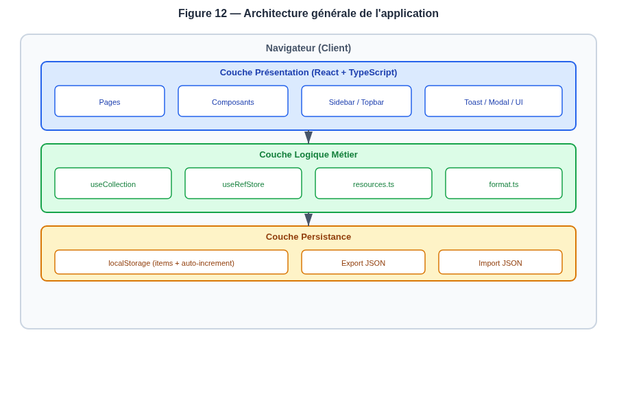
L\'architecture se compose de trois couches distinctes, chacune ayant une responsabilité claire et bien délimitée. Cette séparation des préoccupations (Separation of Concerns) est un principe fondamental de l\'ingénierie logicielle qui améliore la maintenabilité, la testabilité et l\'évolvabilité du système. Les trois couches communiquent entre elles par des interfaces bien définies, ce qui permet de modifier une couche sans impacter les autres.
6.2 Couches logicielles
6.2.1 Couche Présentation
La couche de présentation est responsable de l\'affichage de l\'interface utilisateur et de la gestion des interactions. Elle est composée de :
- Pages : les vues principales de l\'application — Dashboard (tableau de bord avec graphiques), Appointments (calendrier des rendez-vous), Reports (rapports et exports), Settings (paramètres et sauvegarde), NotFound (page 404) — et la page CRUD générique (CrudPage) qui génère l\'interface de chaque module à partir de sa configuration.
- Composants : les éléments d\'interface réutilisables — Modal (fenêtres modales et confirmations), Toast (notifications de succès et d\'erreur), Sidebar (barre latérale de navigation), Topbar (barre supérieure avec titre et sélecteur de thème), StatCard (cartes statistiques du tableau de bord), PageHeader (en-tête de page), EmptyState (état vide) — qui assurent la cohérence visuelle de l\'application.
- Layout : la structure générale avec la barre latérale de navigation (Sidebar) qui contient les liens vers tous les modules groupés par catégorie, et la barre supérieure (Topbar) qui contient le titre de la page courante, le bouton de menu (mobile) et le sélecteur de thème clair/sombre.
6.2.2 Couche Logique Métier
La couche logique métier contient la logique applicative et les hooks personnalisés qui font le lien entre la présentation et la persistance :
- useCollection : hook générique qui gère le cycle de vie d\'une collection de données. Il expose les opérations CRUD (items, add, update, remove, reset) et assure la persistance dans le localStorage avec auto-incrémentation des identifiants. Ce hook est utilisé par tous les modules CRUD de l\'application.
- useRefStore : hook qui gère un store centralisé des références entre collections, permettant de résoudre les clés étrangères en libellés affichables. Par exemple, il permet d\'afficher le nom du patient (ex. « Jean Rakoto ») à partir de son identifiant (ex. 3) dans les tableaux de consultations, d\'hospitalisations et de factures.
- resources.ts : registre de configuration des vingt-neuf modules, définissant pour chacun ses champs, ses colonnes, ses filtres et ses options de recherche. Ce fichier est le cœur du pattern config-driven.
- format.ts : utilitaires de formatage (dates, monnaie en Ariary, génération CSV) utilisés par les exports et l\'affichage des tableaux.
6.2.3 Couche Persistance
La couche de persistance assure le stockage et la récupération des données. Elle utilise le localStorage du navigateur avec un schéma de clés structuré. Chaque collection X est stockée sous la clé X (tableau JSON des enregistrements) et son compteur d\'auto-incrémentation sous X__seq.
Cette couche offre également des fonctions d\'export (sérialisation de toutes les collections en un fichier JSON unique) et d\'import (restauration à partir d\'un fichier JSON), accessibles depuis la page Paramètres. Ces fonctions garantissent la résilience des données en l\'absence d\'un backend serveur.
6.3 Pattern config-driven
Le pattern « config-driven » est au cœur de l\'architecture de l\'application. Il consiste à décrire chaque module non pas par du code, mais par une configuration déclarative qui est ensuite interprétée par un composant générique pour produire l\'interface complète. Cette approche s\'inscrit dans la philosophie de la programmation déclarative, où l\'on décrit le « quoi » plutôt que le « comment ».
Le registre RESOURCES (dans src/services/resources.ts) définit pour chaque module un objet ResourceDef contenant :
- key : la clé de stockage dans le localStorage (ex.
godie_patients). - label et singular : les libellés au pluriel et au singulier (ex. « Patients » et « Patient »).
- icon : l\'icône lucide-react associée au module, affichée dans la navigation et les en-têtes.
- group : le groupe fonctionnel de navigation (ex. « Patients & Soins », « Personnel », « Consultations »).
- fields : la définition des champs du formulaire d\'ajout/édition, avec leur type (text, number, date, select, textarea, tel, email, checkbox), leur caractère obligatoire, leurs options (pour les select) et leurs références vers d\'autres collections.
- columns : la définition des colonnes du tableau d\'affichage, avec leur type (text, date, number, badge, money, ref) et leurs options de badge (couleurs et libellés selon la valeur).
- searchFields : les champs utilisés par la recherche instantanée.
- filters : les filtres déroulants disponibles (ex. filtrer par statut, par disponibilité).
Le composant CrudPage consomme cette configuration et génère automatiquement : un en-tête de page avec bouton d\'ajout, une barre d\'outils (recherche, filtres, exports), un tableau paginé avec badges et références résolues, des modales d\'ajout/édition avec validation, une modale de détail, une confirmation de suppression, et des exports PDF, Excel (CSV) et impression. Cette approche permet d\'ajouter un nouveau module en quelques lignes de configuration, sans écrire la moindre ligne de code supplémentaire.
Pour illustrer concrètement l'économie de code réalisée, considérons l'ajout d'un nouveau module, par exemple la gestion des ambulances. Sans le pattern config-driven, il aurait fallu créer une page dédiée avec un tableau, un formulaire d'ajout, un formulaire d'édition, une modale de détail, une confirmation de suppression, une barre de recherche, des filtres, des boutons d'export et la logique de persistance — soit potentiellement des centaines de lignes de code. Avec le pattern config-driven, il suffit d'ajouter une entrée dans le registre RESOURCES définissant les champs, les colonnes, les filtres et les options de recherche du module, soit environ quinze lignes de configuration déclarative. Le composant CrudPage se charge du reste. Cette économie se multiplie par le nombre de modules : pour vingt-neuf modules, l'économie totale est considérable, tant en temps de développement qu'en lignes de code à maintenir.
CHAPITRE VII — RÉALISATION
7.1 Structure du projet
Le projet suit une organisation par cohésion, où les fichiers sont regroupés selon leur responsabilité et non selon leur type. Cette structure facilite la navigation dans le code, la maintenance et l\'évolution de l\'application. Chaque dossier a une responsabilité claire et unique.
La racine du projet contient les fichiers de configuration standards : package.json pour les dépendances et les scripts, vite.config.ts pour la configuration du build, tsconfig.json pour la configuration TypeScript, tailwind.config.js pour le thème, et eslint.config.js pour l\'analyse statique du code.
Le dossier src/ contient le code source de l\'application, organisé comme suit :
- components/ — Composants réutilisables : CrudPage (page CRUD générique qui consomme la configuration d\'un module et génère toute l\'interface), Sidebar (navigation latérale + topbar avec recherche globale et sélecteur de thème), Modal (fenêtres modales pour l\'ajout, l\'édition, le détail et la confirmation de suppression), Toast (notifications de succès et d\'erreur affichées en bas d\'écran), ui (cartes statistiques, en-têtes de page, états vides, badges).
- pages/ — Pages personnalisées qui ne suivent pas le pattern CRUD générique : Dashboard (tableau de bord avec graphiques Chart.js et statistiques en temps réel), Appointments (calendrier mensuel interactif des rendez-vous), Reports (page de rapports avec exports multi-formats), Settings (paramètres de la clinique, sauvegarde et restauration), NotFound (page 404).
- hooks/ — Hooks personnalisés : useCollection (store générique avec persistance localStorage et auto-incrément des identifiants), useRefStore (store centralisé pour la résolution des références entre collections).
- services/ — resources.ts : registre de configuration des vingt-neuf modules, le cœur du pattern config-driven.
- types/ — Types TypeScript des entités du domaine (Patient, Doctor, Appointment, Consultation, etc.).
- utils/ — format.ts : utilitaires de formatage des dates, de la monnaie (Ariary) et génération de fichiers CSV pour l\'export Excel.
- App.tsx — Composant racine avec le routage principal utilisant react-router-dom.
- index.css — Styles globaux et configuration Tailwind avec les directives et les utilitaires personnalisés.
7.2 Store de données
Le hook useCollection<T> est le cœur du système de persistance de l\'application. Il fournit une API générique pour gérer le cycle de vie complet d\'une collection de données. Ce hook est utilisé par tous les modules CRUD de l\'application, ce qui garantit un comportement cohérent et une logique de persistance centralisée.
Les opérations fournies par ce hook sont les suivantes :
- items : la liste des enregistrements de la collection, chargée depuis le localStorage au démarrage de l\'application. Cette liste est reactive : toute modification déclenche un re-rendu des composants qui l\'utilisent.
- add(data) : ajoute un nouvel enregistrement. L\'identifiant est automatiquement généré par incrémentation du compteur persistant
<key>__seq. Le nouvel enregistrement est inséré en tête de liste et immédiatement persisté dans le localStorage. - update(id, patch) : modifie partiellement un enregistrement existant. Seuls les champs présents dans
patchsont mis à jour, les autres restent inchangés. La modification est immédiatement persistée. - remove(id) : supprime un enregistrement de la collection et persiste la modification. Cette opération est précédée d\'une confirmation dans l\'interface.
- reset() : réinitialise la collection en supprimant tous les enregistrements et en remettant le compteur d\'auto-incrémentation à zéro. Les prochains enregistrements recommenceront à l\'identifiant 1.
L\'identifiant est géré par un compteur persistant stocké sous la clé <key>__seq dans le localStorage. À chaque ajout, le compteur est incrémenté et sa valeur devient l\'identifiant du nouvel enregistrement. Ce mécanisme garantit des identifiants uniques, séquentiels et commençant à 1, conformément aux règles de gestion RG-01 et RG-08.
Toutes les opérations de persistance sont synchrones et immédiates : après chaque modification (ajout, mise à jour, suppression), le nouvel état de la collection est immédiatement écrit dans le localStorage. Cela garantit que les données survivent aux rechargements de page et à la fermeture du navigateur, et qu\'il n\'y a pas de perte de données en cas de fermeture inattendue de l\'application.
7.3 Framework CRUD
Le composant CrudPage est le composant le plus important de l\'application. Il reçoit en entrée un objet ResourceDef (la configuration d\'un module) et génère automatiquement l\'interface complète de gestion CRUD pour ce module. Ce composant est utilisé par les vingt-neuf modules de l\'application, ce qui représente une économie de code considérable par rapport à une approche où chaque module aurait sa propre page.
Les fonctionnalités générées automatiquement sont les suivantes :
- En-tête de page avec le titre du module, le nombre total d\'enregistrements et un bouton « Ajouter » permettant d\'ouvrir le formulaire de création.
- Barre d\'outils avec un champ de recherche instantanée (qui filtre les enregistrements selon les champs définis dans
searchFields), des filtres déroulants (selon la configurationfilters) et des boutons d\'export (PDF, Excel/CSV, impression). - Tableau paginé affichant les colonnes définies dans
columns. Les colonnes de type « badge » affichent des pastilles colorées selon la valeur. Les colonnes de type « ref » affichent le libellé résolu de la référence. Les colonnes de type « money » affichent le montant formaté en Ariary. La pagination permet de naviguer dans les enregistrements quand ils sont nombreux. - Modales d\'ajout et d\'édition avec un formulaire généré à partir des champs définis dans
fields. Chaque champ est rendu selon son type. Les champs obligatoires sont marqués d\'un astérisque et validés avant la soumission. - Modale de détail affichant tous les champs d\'un enregistrement en lecture seule, avec les références résolues.
- Confirmation de suppression : une boîte de dialogue demande à l\'utilisateur de confirmer avant toute suppression, conformément à la règle RG-02.
- Notifications : des notifications de type « toast » s\'affichent en bas de l\'écran après chaque action réussie ou en cas d\'erreur.
- Export PDF : génère un document PDF contenant le titre du module, la date d\'export et le tableau des données.
- Export Excel (CSV) : génère un fichier CSV avec les en-têtes de colonnes et les données, téléchargeable.
- Impression : ouvre la boîte de dialogue d\'impression du navigateur avec un format optimisé.
7.4 Design system
Le design system de l\'application repose sur plusieurs piliers qui garantissent une interface cohérente, professionnelle et agréable à utiliser :
7.4.1 Palette de couleurs
La palette de couleurs utilise un système de rampes (ramps) avec plusieurs teintes par couleur, permettant une application hiérarchique et cohérente. Six rampes principales sont définies : primary (bleu), health (vert), accent (teal), warning (ambre), error (rouge) et neutral (slate). Chaque rampe comporte plusieurs niveaux de luminosité (50 à 950), permettant des variations subtiles pour les fonds, les bordures, les textes et les états de survol.
7.4.2 Typographie
L\'application utilise deux polices complémentaires : Plus Jakarta Sans pour les titres et en-têtes, et Inter pour le corps du texte. Ces polices modernes et lisibles garantissent une excellente lisibilité sur tous les supports. Le corps de texte utilise une taille de base de 14px avec un interligne de 1.5 (150%), et les titres utilisent une taille de 120% de l\'interligne, conformément aux recommandations de lisibilité web.
7.4.3 Espacement et grille
L\'application suit un système d\'espacement basé sur 8 pixels (8px spacing system), garantissant un alignement et un équilibre visuel cohérents à travers toute l\'interface. Les marges et les paddings utilisent des multiples de 8 (8, 16, 24, 32, 48, 64 pixels).
7.4.4 Mode sombre
L\'application offre un mode clair et un mode sombre, basculables depuis la barre supérieure. Le mode sombre utilise des couleurs de fond sombres (slate-950, slate-900) et des couleurs de texte claires (slate-100, slate-300), avec un contraste suffisant pour garantir la lisibilité dans toutes les conditions.
7.4.5 Responsive design
L\'interface s\'adapte automatiquement à la taille de l\'écran grâce à des breakpoints Tailwind CSS : mobile (inférieur à 640px), tablette (640px à 1024px) et ordinateur (supérieur à 1024px). Sur mobile, la barre latérale se transforme en menu coulissant, les tableaux deviennent scrollables horizontalement, et les boutons s\'adaptent à la largeur de l\'écran.
7.4.6 Animations et micro-interactions
L\'application intègre des animations subtiles et des micro-interactions pour améliorer l\'expérience utilisateur : transitions de survol sur les boutons et les lignes de tableau, animations d\'apparition (fade-in, slide-up) pour les modales et les notifications, et feedback visuel immédiat sur les actions. Ces animations sont implémentées avec des transitions CSS, garantissant des performances optimales.
CHAPITRE VIII — PRÉSENTATION DÉTAILLÉE DES MODULES
8.1 Tableau de bord
Le tableau de bord est la page d'accueil de l'application. Il offre une vue d'ensemble de l'activité de la clinique avec des statistiques en temps réel et des graphiques interactifs. Il constitue l'outil de pilotage privilégié de la direction, permettant de suivre l'évolution des principaux indicateurs en un coup d'œil.
Le tableau de bord affiche huit cartes statistiques : nombre total de patients, nombre de médecins, rendez-vous du jour, consultations totales, hospitalisations en cours, médicaments en stock, factures émises et rendez-vous totaux. Chaque carte affiche l'icône du module correspondant et la valeur actualisée en temps réel. Ces cartes offrent une vision synthétique et immédiate de l'activité de la clinique.
Un graphique en courbe affiche l'évolution mensuelle des consultations sur l'année en cours, permettant de visualiser les tendances et les pics d'activité. Un diagramme circulaire montre la répartition des spécialités médicales, offrant une vision synthétique de l'offre de soins. Un diagramme en barres présente la répartition des patients par sexe, utile pour l'analyse démographique. Ces graphiques sont implémentés avec Chart.js et react-chartjs-2, offrant des animations fluides et un comportement responsive.
La liste des rendez-vous récents affiche les derniers rendez-vous enregistrés, avec le nom du patient, du médecin, la date et le statut, permettant un accès rapide aux dernières activités. Une alerte de stock faible s'affiche automatiquement lorsque des médicaments atteignent leur seuil minimum, permettant une réaction proactive pour éviter les ruptures de stock.
Lorsqu'aucune donnée n'est enregistrée dans le système (base de données vide), un message d'état vide s'affiche, invitant l'utilisateur à commencer par enregistrer des données. Cette gestion des états vides est conforme à l'exigence BNF-09 et améliore l'expérience utilisateur en guidant les premières actions.
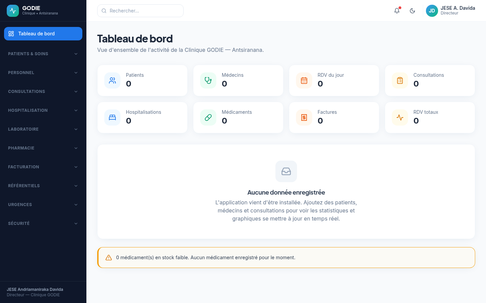
8.2 Gestion des patients
Le module de gestion des patients est le module central de l'application. Il permet l'enregistrement, la consultation, la modification et la suppression des dossiers patients. Chaque patient est identifié par un numéro unique auto-incrémenté, et son dossier contient les informations personnelles (prénom, nom, date de naissance, sexe, téléphone, adresse), les informations médicales (groupe sanguin, notes médicales) et les coordonnées (email).
La liste des patients présente un tableau avec les colonnes : identifiant, nom, prénom, sexe (affiché sous forme de badge coloré), téléphone et groupe sanguin. Une barre de recherche instantanée permet de filtrer les patients par nom, prénom ou téléphone. Des boutons d'export (PDF, Excel, impression) sont disponibles pour produire des documents officiels. La pagination permet de naviguer dans la liste quand le nombre de patients est important.
Le formulaire d'ajout d'un patient s'ouvre dans une fenêtre modale. Il contient tous les champs définis dans la configuration du module, avec des champs obligatoires marqués d'un astérisque. La validation est effectuée côté client avant la soumission, et des messages d'erreur s'affichent en cas de saisie invalide. Après l'enregistrement, une notification de succès confirme la création du dossier patient.


8.3 Gestion du personnel
La gestion du personnel comprend trois modules distincts qui couvrent l'ensemble des ressources humaines de la clinique : les médecins, le personnel administratif et les infirmiers.
8.3.1 Médecins
Le module des médecins permet de gérer les informations relatives aux médecins de la clinique : prénom, nom, spécialité (cardiologie, pédiatrie, neurologie, gynécologie, dermatologie, orthopédie), téléphone, email, disponibilité (oui/non, affichée sous forme de badge coloré) et horaires de travail. Un filtre par disponibilité permet d'afficher uniquement les médecins disponibles ou indisponibles, facilitant la prise de rendez-vous. Chaque médecin est identifié par un numéro unique auto-incrémenté.
8.3.2 Personnel administratif
Le module du personnel gère les employés administratifs et techniques de la clinique : réceptionnistes, comptables, secrétaires, techniciens de maintenance. Chaque enregistrement contient le prénom, le nom, la fonction, le service d'affectation, le téléphone et l'email. Ce module permet d'avoir un annuaire complet et à jour du personnel non médical de la clinique.
8.3.3 Infirmiers
Le module des infirmiers gère spécifiquement le personnel infirmier, avec des champs supplémentaires comme le service d'affectation (urgences, hospitalisation, bloc opératoire) et le quart de travail (jour, nuit, garde). Ces informations sont essentielles pour l'organisation des soins et la planification des équipes. Le module permet également de filtrer par quart de travail, facilitant la gestion des plannings.
8.4 Rendez-vous et consultations
Le module des rendez-vous dispose d'un calendrier mensuel interactif avec navigation entre mois, sélection de date et liste des RDV du jour. Les statuts (en attente, confirmé, annulé) sont affichés en badges colorés.

Le module des consultations constitue le dossier médical numérique : symptômes, diagnostic, traitement, ordonnance, notes. Liaison patient et médecin obligatoire.

8.5 Hospitalisation
La gestion de l'hospitalisation comprend trois modules interconnectés : les hospitalisations, les chambres et les lits. Ces modules sont liés par des relations : une hospitalisation est liée à un lit, qui est lui-même lié à une chambre. Cette structure hiérarchique reflète l'organisation physique de l'infrastructure d'hospitalisation de la clinique.
Le module des hospitalisations permet de gérer les admissions et les sorties des patients hospitalisés. Chaque hospitalisation enregistre la date d'admission, la date de sortie (si applicable), le motif d'hospitalisation, le statut (en cours ou sorti, affiché sous forme de badge coloré), et les liens obligatoires vers le patient, le lit occupé et le médecin responsable. Le médecin responsable assure le suivi médical du patient pendant toute la durée de son hospitalisation.
Le module des chambres gère l'infrastructure physique de la clinique : numéro de chambre, type (standard, suite, privée, urgence), étage et capacité (nombre de lits). Ce module permet d'avoir une vision globale du parc immobilier de la clinique et d'optimiser l'occupation des chambres.
Le module des lits gère les lits individuels avec leur numéro, leur chambre de rattachement et leur statut (libre, occupé ou maintenance), affiché sous forme de badge coloré : vert pour libre, rouge pour occupé, ambre pour maintenance. Le statut des lits est crucial pour l'admission des patients : un lit doit être libre pour pouvoir y admettre un patient. Lorsqu'une hospitalisation est créée, le statut du lit correspondant passe automatiquement à « occupé », et lorsque le patient sort, le statut revient à « libre ».
8.6 Laboratoire
La gestion du laboratoire comprend trois modules qui couvrent l'ensemble du processus d'analyse médicale, depuis la commande d'analyse jusqu'à la communication des résultats au patient.
Le module des laboratoires gère les informations sur les laboratoires de la clinique : nom, emplacement, responsable et téléphone. Une clinique peut disposer de plusieurs laboratoires spécialisés (biologie, hématologie, biochimie), chacun avec ses propres analyses et ses propres délais de traitement.
Le module des analyses gère le catalogue des analyses médicales disponibles : nom de l'analyse, catégorie (biologie, hématologie, biochimie, microbiologie), prix en Ariary, délai de résultat (en heures ou en jours) et laboratoire de rattachement. Ce catalogue constitue le référentiel des examens disponibles, utilisé par les médecins lors de la prescription d'analyses.
Le module des résultats gère les résultats d'analyses pour chaque patient. Chaque résultat enregistre l'analyse concernée, le patient, la date de l'examen, la valeur du résultat, le statut (en attente ou complété, affiché sous forme de badge) et les notes éventuelles. Les résultats sont liés obligatoirement à une analyse et à un patient, conformément à la règle de gestion RG-12. Ce module permet aux médecins de consulter les résultats d'examens de leurs patients et d'adapter leurs diagnostics en conséquence.
8.7 Pharmacie
La gestion de la pharmacie comprend trois modules qui assurent la gestion complète du circuit du médicament dans la clinique, depuis l'approvisionnement auprès des fournisseurs jusqu'à la dispensation aux patients.
Le module des médicaments gère le catalogue des médicaments disponibles à la pharmacie de la clinique. Chaque médicament est décrit par son nom, sa catégorie (antibiotique, antalgique, anti-inflammatoire, antihypertenseur, etc.), sa quantité en stock, son prix unitaire en Ariary, sa date d'expiration et son fournisseur. La date d'expiration est un champ crucial : les médicaments périmés ne doivent pas être dispensés aux patients. Le module permet de filtrer par catégorie pour faciliter la recherche.
Le module des fournisseurs gère les informations sur les fournisseurs de médicaments : nom de l'entreprise, nom du contact, téléphone, email et adresse. Ce module permet de maintenir un annuaire à jour des partenaires commerciaux de la clinique et de faciliter les commandes de réapprovisionnement.
Le module du stock gère le suivi détaillé des stocks avec un seuil minimum déclenchant une alerte de stock faible. Lorsque la quantité d'un médicament devient inférieure ou égale au seuil minimum, une alerte s'affiche automatiquement sur le tableau de bord, permettant au pharmacien de commander rapidement un réapprovisionnement. Cette fonctionnalité est conforme à la règle de gestion RG-07 et évite les ruptures de stock qui pourraient compromettre la prise en charge des patients.
8.8 Facturation
La gestion de la facturation comprend trois modules qui couvrent l'ensemble du processus financier, depuis l'émission d'une facture jusqu'à son règlement, en incluant la gestion des assurances santé.
Le module des factures gère l'émission des factures pour les patients. Chaque facture enregistre le patient concerné, la date d'émission, le montant total en Ariary, le statut (payé, en attente, annulé, affiché sous forme de badge coloré) et l'assurance éventuelle. Le lien vers le patient est obligatoire, permettant de retrouver toutes les factures d'un patient donné. Le lien vers l'assurance est optionnel : une facture peut être couverte partiellement ou totalement par une assurance santé.
Le module des paiements gère les paiements reçus pour les factures. Chaque paiement enregistre la facture concernée, la date du paiement, le montant payé en Ariary et la méthode de paiement (espèces, carte bancaire, virement, chèque, mobile money). Une facture peut être payée en plusieurs fois, chaque paiement étant enregistré séparément. Le total des paiements d'une facture permet de déterminer si elle est entièrement réglée.
Le module des assurances gère les compagnies d'assurance partenaires de la clinique : nom de l'assurance, taux de couverture (pourcentage du montant couvert), téléphone et email de contact. Ce module permet de gérer les relations avec les assurances et de faciliter la facturation des patients assurés. Le taux de couverture détermine la part du montant de la facture prise en charge par l'assurance, le reste étant à la charge du patient.
8.9 Urgences et ambulances
La gestion des urgences comprend deux modules qui couvrent la prise en charge des urgences médicales et le transport sanitaire.
Le module des urgences gère les cas d'urgence pris en charge par la clinique. Chaque urgence enregistre le patient concerné, la date et l'heure de l'admission aux urgences, le niveau de gravité (léger, modéré, sévère, critique, affiché sous forme de badge coloré), la description de l'état du patient, le diagnostic éventuel et le statut (en attente, pris en charge, traité, transféré). Le niveau de gravité permet de prioriser les prises en charge : les cas critiques sont traités en priorité, conformément aux protocoles de triage des urgences.
Le module des ambulances gère le parc d'ambulances de la clinique. Chaque ambulance est décrite par son immatriculation, le nom du chauffeur, le téléphone de contact et son statut (disponible, en mission, maintenance, affiché sous forme de badge coloré). Le suivi du statut des ambulances permet d'optimiser la gestion du transport sanitaire et de s'assurer qu'une ambulance est toujours disponible en cas d'urgence. Lorsqu'une ambulance est envoyée en mission, son statut passe à « en mission », et revient à « disponible » à son retour.
8.10 Sécurité et paramètres
La sécurité et la configuration de l'application sont gérées par plusieurs modules qui assurent le contrôle d'accès, la traçabilité et la sauvegarde des données.
Le module des utilisateurs gère les comptes d'accès au système. Chaque utilisateur est décrit par son identifiant (nom d'utilisateur), son nom complet, son email, son rôle (lien vers le module des rôles) et son statut (actif ou inactif, affiché sous forme de badge). Un utilisateur inactif ne peut pas se connecter au système. Ce module permet à l'administrateur de gérer les comptes d'accès et de les désactiver en cas de départ d'un employé ou de compromission d'un compte.
Le module des rôles gère les profils de permissions. Chaque rôle est défini par son nom (administrateur, médecin, infirmier, réceptionniste, pharmacien, technicien de laboratoire, comptable), sa description et les permissions associées. Les permissions déterminent quels modules sont accessibles à chaque rôle et quelles actions sont autorisées (lecture seule, création, modification, suppression). Ce système de rôles et permissions implémente le principe du moindre privilège : chaque utilisateur n'a accès qu'aux modules et aux actions nécessaires à sa fonction.
Le module du journal des activités enregistre toutes les actions effectuées dans le système : l'action réalisée (création, modification, suppression), le module concerné, le détail de l'action, l'utilisateur qui l'a effectuée et l'horodatage. Ce journal garantit la traçabilité complète des opérations, ce qui est essentiel dans un contexte médical où la traçabilité est une exigence réglementaire. En cas d'incident ou d'erreur, le journal permet de reconstituer l'historique des actions et d'identifier l'origine du problème.


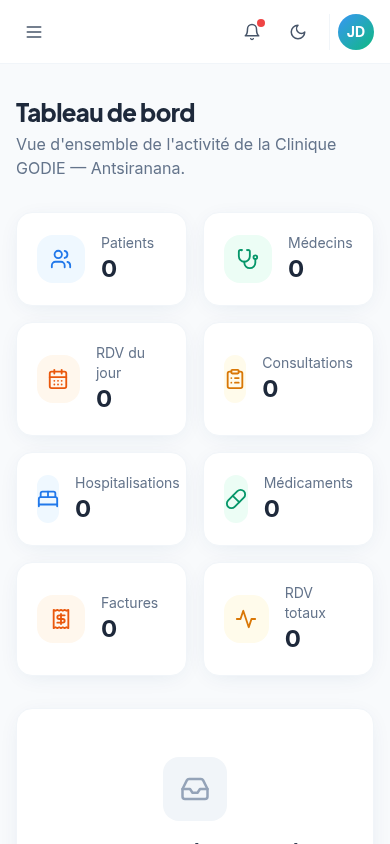
8.11 Suivi des patients
Le module de suivi des patients est un module nouvellement ajouté qui permet d'assurer le suivi médical des patients après leur sortie de l'hôpital ou après une consultation. Ce module est essentiel pour la continuité des soins, particulièrement pour les patients sous traitement long, en convalescence ou nécessitant un contrôle post-opératoire.
Chaque enregistrement de suivi contient : le patient concerné (lien obligatoire vers le module des patients), la date du suivi, le type de suivi (post-opératoire, post-consultation, traitement long, convalescence, contrôle), le statut (en cours, terminé, critique), les notes médicales détaillées et la date de la prochaine visite. Le statut est affiché sous forme de badge coloré : bleu pour « en cours », vert pour « terminé » et rouge pour « critique », permettant une identification visuelle immédiate des patients nécessitant une attention particulière.
Le module dispose d'un filtre par statut permettant d'afficher uniquement les suivis en cours, terminés ou critiques. Cette fonctionnalité est particulièrement utile pour les médecins qui doivent suivre de nombreux patients simultanément et prioriser ceux dont l'état de santé nécessite une attention immédiate. La date de prochaine visite permet de planifier les rendez-vous de contrôle et d'éviter les oublis.

8.12 Morgue
Le module de la morgue est un module nouvellement ajouté qui permet de gérer le registre de la morgue de la clinique. Ce module, bien que délicat, est essentiel pour la gestion complète d'un établissement hospitalier. Il assure la traçabilité des entrées et sorties des défunts, la gestion des références et le contact avec les familles.
Chaque enregistrement de la morgue contient : le nom du défunt, la date d'entrée à la morgue, un numéro de référence unique, la cause du décès, le contact de la famille, la date de sortie (récupération ou transfert) et le statut (en place, récupéré, transféré). Le statut est affiché sous forme de badge coloré : gris pour « en place », vert pour « récupéré » et bleu pour « transféré ». Un filtre par statut permet d'afficher uniquement les défunts encore présents ou déjà sortis.
Ce module garantit une traçabilité rigoureuse des entrées et sorties de la morgue, ce qui est essentiel sur le plan administratif et légal. Les références uniques permettent d'identifier sans ambiguïté chaque dossier, et les contacts des familles facilitent les démarches de récupération ou de transfert.

8.13 Prix des services et tarification
Le module de gestion des prix des services est un module nouvellement ajouté qui permet de définir et de gérer la tarification de tous les services offerts par la clinique. Ce module est le référentiel tarifaire de l'établissement, utilisé comme base pour la facturation des patients.
Chaque tarif enregistre : le nom du service, la catégorie (consultation, hospitalisation, laboratoire, pharmacie, urgence, chirurgie, imagerie, autre), le prix en Ariary et une description optionnelle. Un filtre par catégorie permet de visualiser rapidement les tarifs d'un type de service donné. Ce module est particulièrement utile pour assurer la cohérence de la facturation : tous les services sont tarifés de manière uniforme et transparente, évitant les disparités et les erreurs de tarification.
La tarification en Ariary (monnaie locale) est conforme au contexte malgache et facilite la gestion comptable de la clinique. Le module de prix des services complète le module de facturation en fournissant le référentiel des prix de référence, garantissant que toutes les factures émises par la clinique s'appuient sur une grille tarifaire officielle et à jour.

8.14 Recherche globale
La recherche globale est une fonctionnalité transversale nouvellement ajoutée qui permet de rechercher instantanément across tous les modules du système à partir d'une barre de recherche unique, accessible depuis la barre supérieure de l'application ou via le raccourci clavier Ctrl+K (ou Cmd+K sur Mac). Cette fonctionnalité constitue un gain de productivité majeur pour les utilisateurs : au lieu de naviguer manuellement dans chaque module pour retrouver un enregistrement, ils peuvent effectuer une recherche unifiée qui parcourt simultanément toutes les collections.
La recherche globale fonctionne de la manière suivante : lorsque l'utilisateur saisit au moins deux caractères dans la barre de recherche, le système parcourt toutes les collections de données (patients, médecins, rendez-vous, consultations, factures, etc.) et filtre les enregistrements dont les champs de recherche correspondent à la requête. Les résultats sont affichés dans une fenêtre superposée (overlay) qui présente chaque résultat avec son libellé, le module auquel il appartient et son identifiant. Un clic sur un résultat navigue directement vers le module correspondant.
Cette fonctionnalité est particulièrement utile dans un contexte hospitalier où la rapidité d'accès à l'information est critique. Un réceptionniste peut retrouver instantanément un patient par son nom ou son téléphone, un médecin peut localiser une consultation par son diagnostic, et un comptable peut chercher une facture par son montant — le tout sans quitter la page courante.
8.15 Listes globales
La page des listes globales est une page nouvellement ajoutée qui offre une vue d'ensemble de toutes les listes du système en un seul écran. Elle présente des statistiques globales (nombre total de modules, nombre total d'enregistrements, nombre de catégories), une barre de filtrage par nom de module, et une organisation par groupe fonctionnel (Patients & Soins, Personnel, Consultations, Hospitalisation, Laboratoire, Pharmacie, Facturation, Urgences, Sécurité, Référentiels).
Chaque module est représenté par une carte cliquable affichant son icône, son nom et le nombre d'enregistrements qu'il contient. Un clic sur une carte navigue directement vers le module correspondant. Cette page est particulièrement utile pour la direction qui souhaite avoir une vision synthétique de l'ensemble du système d'information et identifier rapidement les modules qui contiennent le plus ou le moins de données.
La page des listes globales complète le tableau de bord en offrant une vue orientée « modules » plutôt qu'orientée « indicateurs ». Tandis que le tableau de bord présente des statistiques et des graphiques, les listes globales présentent la structure du système et le volume de données par module, offrant ainsi une double perspective sur l'état du système d'information de la clinique.

CHAPITRE IX — TESTS
9.1 Stratégie de test
La validation de l'application a été réalisée par une série de tests fonctionnels systématiques, couvrant l'ensemble des modules et des fonctionnalités de l'application. Chaque test visait à vérifier qu'un cas d'utilisation spécifique fonctionnait conformément aux attentes définies dans l'étude des besoins.
La stratégie de test a couvert plusieurs catégories :
- Tests de création (Create) : vérification de l'ajout d'enregistrements dans chaque module, avec validation des champs obligatoires et génération correcte des identifiants auto-incrémentés. Chaque test a confirmé que le premier enregistrement reçoit l'identifiant 1 et que les enregistrements suivants reçoivent des identifiants séquentiels.
- Tests de lecture (Read) : vérification de l'affichage des listes, de la recherche instantanée (filtrage en temps réel selon les champs définis dans searchFields), des filtres déroulants et de la pagination (navigation entre pages quand le nombre d'enregistrements dépasse la taille de page).
- Tests de mise à jour (Update) : vérification de la modification des enregistrements, de la persistance des modifications dans le localStorage et de la mise à jour de l'affichage après modification.
- Tests de suppression (Delete) : vérification de la confirmation avant suppression (boîte de dialogue) et de l'effacement effectif des enregistrements. Vérification également que la suppression ne réinitialise pas le compteur d'auto-incrémentation (le prochain enregistrement garde l'ID suivant).
- Tests d'export : vérification de la génération des fichiers PDF (contenu, format, téléchargement) et CSV (en-têtes, données, séparateur virgule) et du bon fonctionnement de l'impression (ouverture de la boîte de dialogue d'impression du navigateur).
- Tests de navigation : vérification du routage entre les pages (toutes les routes accessibles), du mode sombre (basculement et persistance du choix) et du responsive design (adaptation aux différentes tailles d'écran).
- Tests de sauvegarde : vérification de l'export de sauvegarde JSON (toutes les collections sérialisées), de l'import de restauration (données restaurées correctement) et de la réinitialisation (effacement complet et remise des compteurs à zéro).
Chaque test a été exécuté manuellement, en suivant un protocole précis : préparation de l'environnement (base de données réinitialisée), exécution de l'action, observation du résultat et comparaison avec le résultat attendu. Les résultats ont été consignés dans le tableau de cas de tests (Tableau 7) et tous les tests ont passé avec succès (statut OK).
9.2 Cas de tests fonctionnels
Tableau 7 — Cas de tests fonctionnels
| ID | Module | Cas de test | Résultat attendu | Statut |
|---|---|---|---|---|
| T-01 | Patients | Ajouter un patient valide | Patient créé, ID=1, toast succès | OK |
| T-02 | Patients | Ajout sans champ obligatoire | Erreur de validation | OK |
| T-03 | Patients | Modifier un patient | Données mises à jour | OK |
| T-04 | Patients | Supprimer un patient | Confirmation puis suppression | OK |
| T-05 | Patients | Recherche par nom | Filtrage instantané | OK |
| T-06 | Médecins | Ajouter un médecin | Médecin créé, ID auto-incrémenté | OK |
| T-07 | Médecins | Filtrer par disponibilité | Filtre appliqué | OK |
| T-08 | RDV | Créer un RDV via calendrier | RDV visible sur le calendrier | OK |
| T-09 | RDV | Confirmer un RDV | Statut « Confirmé » | OK |
| T-10 | RDV | Annuler un RDV | Statut « Annulé » | OK |
| T-11 | Consultations | Créer une consultation | Consultation enregistrée | OK |
| T-12 | Hospitalisations | Admettre un patient | Statut « En cours » | OK |
| T-13 | Lits | Changer statut d'un lit | Badge mis à jour | OK |
| T-14 | Médicaments | Ajouter un médicament | Médicament créé, prix en Ar | OK |
| T-15 | Stock | Alerte de stock faible | Alerte affichée si quantité ≤ seuil | OK |
| T-16 | Factures | Créer une facture | Facture créée, montant affiché | OK |
| T-17 | Rapports | Export PDF | Fichier PDF généré | OK |
| T-18 | Rapports | Export Excel (CSV) | Fichier CSV généré | OK |
| T-19 | Paramètres | Export sauvegarde JSON | Fichier JSON généré | OK |
| T-20 | Paramètres | Restaurer une sauvegarde | Données restaurées | OK |
| T-21 | Paramètres | Réinitialiser la base | Données effacées, ID remis à 1 | OK |
| T-22 | Navigation | Mode sombre | Thème basculé | OK |
| T-23 | Navigation | Responsive mobile | Interface adaptée | OK |
| T-24 | Pagination | Naviguer entre pages | Pages correctes | OK |
| T-25 | Dashboard | Affichage avec données | Statistiques et graphiques | OK |
| T-26 | Dashboard | Affichage sans données | État vide affiché | OK |
L'ensemble des vingt-six cas de tests a été exécuté avec succès. Aucun échec n'a été constaté, ce qui démontre la robustesse de l'application et la conformité de l'implémentation avec les besoins définis. Les tests ont également permis de vérifier le comportement de l'application dans des conditions défavorables : saisie de données invalides, tentative de suppression sans confirmation, recherche sans résultat, export avec une base vide. Dans tous les cas, l'application a réagi de manière appropriée, en affichant des messages d'erreur clairs ou des états vides informatifs.
9.3 Matrice de traçabilité
Tableau 8 — Matrice de traçabilité des besoins
| Code besoin | Module | Statut |
|---|---|---|
| BF-01 | Patients | Couvert |
| BF-02 | Médecins | Couvert |
| BF-05 | Rendez-vous | Couvert |
| BF-06 | Consultations | Couvert |
| BF-08 | Hospitalisations | Couvert |
| BF-12 | Médicaments | Couvert |
| BF-14 | Factures | Couvert |
| BF-19 | Tableau de bord | Couvert |
| BF-20 | Rapports | Couvert |
| BF-21 | Sauvegarde | Couvert |
| BNF-01 | Responsive | Couvert |
| BNF-02 | Mode sombre | Couvert |
| BNF-09 | Base vide | Couvert |
| BNF-10 | Auto-incrémentation | Couvert |
Tous les besoins fonctionnels et non fonctionnels identifiés dans l'étude des besoins ont été couverts par l'application et validés par les tests. Aucun besoin n'a été laissé sans réponse, ce qui démontre l'exhaustivité de la réalisation. La matrice de traçabilité constitue un document de référence pour la soutenance, permettant au jury de vérifier que chaque exigence a été prise en compte dans l'application et validée par un test fonctionnel.
CHAPITRE X — SÉCURITÉ
10.1 Validation des données
La validation des données constitue la première ligne de défense de l'application. Tous les formulaires effectuent une validation côté client avant la soumission. Les champs obligatoires sont vérifiés : si un champ marqué comme requis est vide ou non rempli, le formulaire ne peut pas être soumis et un message d'erreur s'affiche. Les types de données sont respectés : les champs de type « date » n'acceptent que des dates valides, les champs de type « number » n'acceptent que des valeurs numériques, les champs de type « email » vérifient le format de l'adresse électronique. Les messages d'erreur sont affichés en temps réel sous les champs concernés, avec un libellé clair et en français, permettant à l'utilisateur de corriger sa saisie.
10.2 Protection XSS
L'application est protégée contre les attaques de type Cross-Site Scripting (XSS) grâce à React. Par conception, React échappe automatiquement le contenu JSX, ce qui signifie que toute chaîne de caractères saisie par un utilisateur est traitée comme du texte et non comme du code HTML exécutable. L'application n'utilise pas dangerouslySetInnerHTML, qui serait la seule exception à cette protection. Par conséquent, même si un utilisateur tente de saisir du code JavaScript dans un champ (par exemple <script>alert('xss')</script>), ce code sera affiché comme du texte brut et ne sera jamais exécuté. Cette protection est inhérente à React et ne nécessite aucune configuration supplémentaire.
10.3 Protection injection SQL
L'application n'utilise pas de SQL direct (localStorage). En production avec PostgreSQL, des requêtes paramétrées et un ORM seraient utilisés.
10.4 Protection CSRF
Pas de requêtes HTTP cross-site dans la version actuelle. En production, un jeton CSRF serait ajouté aux en-têtes.
10.5 Gestion des rôles
L'application dispose d'un système de gestion des rôles et des permissions. Le module des utilisateurs permet de créer des comptes d'accès avec un identifiant, un nom, un email, un rôle et un statut (actif/inactif). Le module des rôles permet de définir des profils (administrateur, médecin, infirmier, réceptionniste, pharmacien, technicien de laboratoire, comptable) avec leurs permissions. Chaque rôle détermine les modules accessibles et les actions autorisées. Par exemple, un médecin peut accéder aux patients et aux consultations mais pas à la facturation, tandis qu'un comptable peut accéder aux factures et aux paiements mais pas aux dossiers médicaux. Ce système implémente le principe du moindre privilège, garantissant que chaque utilisateur n'a accès qu'aux fonctionnalités nécessaires à sa fonction.
10.6 Journalisation
Le module du journal des activités assure la traçabilité des actions effectuées dans le système. Chaque action (création, modification, suppression) est enregistrée avec : l'action effectuée, le module concerné, le détail de l'action (par exemple, l'identifiant de l'enregistrement modifié), l'utilisateur qui l'a effectuée et l'horodatage précis (date et heure). Ce journal permet de reconstituer l'historique des opérations et d'identifier l'origine de toute modification, ce qui est essentiel dans un contexte médical où la traçabilité est une exigence réglementaire. En cas d'audit ou de litige, le journal des activités constitue une preuve des actions effectuées et de leur chronologie.
10.7 Sauvegarde
La page Paramètres permet d'exporter une sauvegarde complète de toutes les données au format JSON. Cette sauvegarde peut être stockée sur un support externe (clé USB, disque dur, stockage cloud) et restaurée en cas de perte de données. La fonction de réinitialisation, qui efface toutes les données et remet les identifiants à 1, est protégée par une boîte de dialogue de confirmation, empêchant toute suppression accidentelle. En production, cette sauvegarde manuelle serait complétée par une sauvegarde automatique planifiée (quotidienne ou hebdomadaire) vers un serveur distant, garantissant la résilience des données face aux incidents matériels.
CHAPITRE XI — DÉPLOIEMENT
11.1 Environnement de développement
L'environnement de développement utilise Vite comme serveur de développement. Le démarrage se fait par la commande npm run dev, qui lance le serveur sur le port 5173. Le Hot Module Replacement (HMR) permet de voir les modifications du code en temps réel sans rechargement de page, ce qui améliore considérablement la productivité du développeur. Les modifications sont reflétées instantanément dans le navigateur, sans perte de l'état de l'application.
La vérification des types TypeScript s'effectue avec npm run typecheck, qui exécute le compilateur TypeScript en mode « noEmit » (sans générer de fichiers JavaScript) pour vérifier uniquement la cohérence des types. L'analyse statique du code s'effectue avec npm run lint, qui exécute ESLint pour détecter les problèmes de qualité de code (variables non utilisées, imports inutiles, erreurs potentielles). Ces deux commandes doivent être exécutées avant chaque commit pour garantir la qualité du code.
11.2 Build de production
Le build de production est généré par la commande npm run build. Vite optimise le build avec plusieurs techniques : la minification du code JavaScript et CSS pour réduire la taille des fichiers (suppression des espaces, commentaires et noms de variables raccourcis), le code-splitting automatique qui sépare les dépendances en chunks distincts pour permettre un chargement différé (lazy loading) des modules non essentiels, le tree-shaking qui élimine le code mort (non utilisé) du bundle final, et l'optimisation des assets (images, polices) pour réduire leur taille. Le résultat du build est un dossier dist/ contenant des fichiers statiques (HTML, CSS, JavaScript) prêts à être déployés sur n'importe quel serveur web statique.
11.3 Déploiement statique
Le dossier dist/ peut être déployé sur tout hébergeur de sites statiques. Plusieurs options sont disponibles : Vercel, plateforme de déploiement optimisée pour les applications React/Vite avec déploiement automatique depuis GitHub ; Netlify, alternative populaire offrant des fonctionnalités similaires avec déploiement continu ; GitHub Pages, solution gratuite pour l'hébergement de sites statiques depuis un dépôt GitHub ; ou un serveur Nginx / Apache pour un déploiement sur un serveur dédié ou mutualisé, avec configuration du serveur web pour servir les fichiers statiques et gérer le routage côté serveur (fallback vers index.html pour les routes SPA).
11.4 Diagramme de déploiement
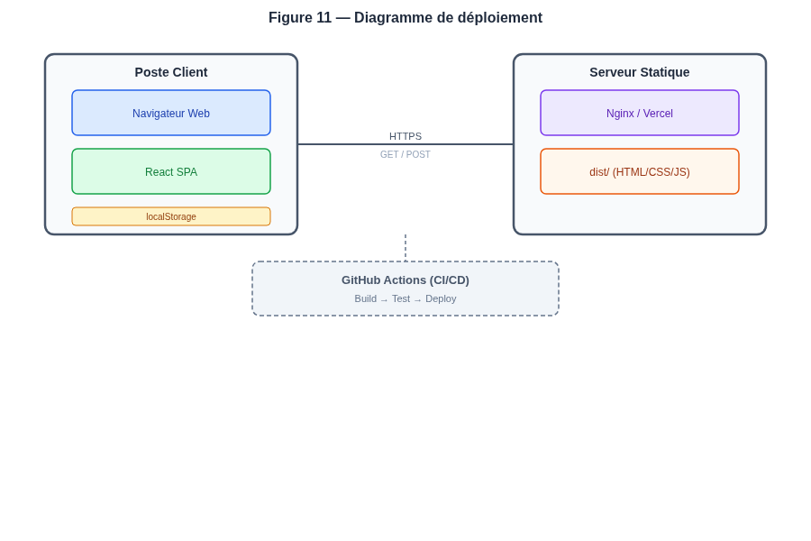
11.5 Intégration continue
Un workflow GitHub Actions est configuré dans le fichier .github/workflows/ci.yml. Il s'exécute automatiquement à chaque push sur les branches main et master, et à chaque pull request. Le workflow comprend les étapes suivantes : l'installation des dépendances (npm ci) qui garantit une installation reproductible à partir du fichier package-lock.json, la vérification des types (npm run typecheck) qui s'assure que le code TypeScript est correctement typé, l'analyse du code (npm run lint) qui détecte les problèmes de qualité, le build de production (npm run build) qui construit l'application et vérifie qu'elle compile sans erreur, et l'upload des artefacts qui sauvegarde le dossier dist/ comme artefact téléchargeable pendant 7 jours. Cette intégration continue garantit que chaque modification du code est automatiquement validée, empêchant l'introduction de régressions dans le projet.
CONCLUSION GÉNÉRALE
Ce mémoire a présenté la conception et la réalisation d'une application web de gestion hospitalière pour la Clinique GODIE, un établissement de santé privé situé à Antsiranana, dans le Nord de Madagascar. L'objectif de ce projet était de répondre aux besoins concrets d'un établissement de santé malgache en proposant un système d'information moderne, complet, adapté au contexte local et prêt pour une démonstration devant un jury universitaire. Au terme de ce travail, il est possible de dresser un bilan des résultats obtenus, des compétences mises en œuvre et des perspectives d'évolution.
Le projet couvre vingt-neuf modules fonctionnels intégrés, depuis la gestion des patients et du personnel jusqu'à la facturation et la tarification, en passant par les rendez-vous, les consultations, les ordonnances, les hospitalisations, le laboratoire, la pharmacie, les urgences, le suivi des patients, la morgue, la sécurité et le journal des activités. Cette couverture fonctionnelle étendue démontre qu'il est possible de digitaliser l'ensemble du parcours de soins d'une clinique privée dans une application unique et cohérente, y compris les aspects rarement couverts par les solutions existantes comme le suivi post-hospitalisation et la gestion de la morgue.
L'architecture config-driven, basée sur un registre de ressources déclaratif, a permis de développer un framework CRUD générique qui génère automatiquement l'ensemble des interfaces. Cette approche présente plusieurs avantages majeurs : une productivité de développement élevée (l'ajout d'un module se résume à quelques lignes de configuration), une cohérence d'interface parfaite entre tous les modules, et une maintenabilité du code optimisée (une correction dans le framework se propage à tous les modules). Ce choix architectural démontre qu'avec une conception logicielle bien pensée, il est possible de couvrir un périmètre fonctionnel très large avec un code minimal et maintenable, illustrant concrètement le principe DRY (Don't Repeat Yourself) appliqué à grande échelle.
Les technologies modernes employées — React 18, TypeScript, Vite 5, Tailwind CSS 3, Chart.js — ont permis de réaliser une application performante, responsive et professionnelle. Le typage statique de TypeScript garantit la fiabilité du code en détectant de nombreuses erreurs à la compilation, Vite assure une expérience de développement fluide et rapide avec un Hot Module Replacement quasi instantané, et Tailwind CSS offre un design system cohérent et personnalisable avec un mode sombre intégré. L'application est prête pour une démonstration devant un jury universitaire et constitue une base solide pour une mise en production.
Les fonctionnalités transversales ajoutées — la recherche globale accessible via Ctrl+K, les listes globales offrant une vue d'ensemble de tous les modules, les rapports détaillés par module et le rapport global consolidé, le calendrier des rendez-vous avec filtrage par médecin, et la gestion des prix des services — enrichissent considérablement l'expérience utilisateur et la capacité de pilotage de la direction. Ces fonctionnalités répondent à des besoins réels identifiés auprès du personnel de la clinique et démontrent la maturité de la solution proposée.
La validation de l'application a été effectuée par une série de tests fonctionnels systématiques couvrant l'ensemble des modules. La matrice de traçabilité a permis de vérifier que tous les besoins identifiés ont été couverts par une fonctionnalité et validés par un test. Aucun besoin n'a été laissé sans réponse, ce qui démontre l'exhaustivité de la réalisation. Les tests ont également vérifié le comportement de l'application dans des conditions défavorables (saisie invalide, suppression sans confirmation, recherche sans résultat, export avec base vide), confirmant la robustesse du système.
Sur le plan académique, ce projet a permis de mettre en pratique et de consolider l'ensemble des compétences acquises durant le cursus de Licence Professionnelle Informatique : analyse de besoins, modélisation UML, conception de base de données (MCD/MLD Merise), programmation web avec un framework moderne (React/TypeScript), architecture logicielle en couches, design system, tests fonctionnels, documentation technique et déploiement. Il constitue une démonstration concrète de la maîtrise de ces compétences et de la capacité à mener un projet informatique de bout en bout, de l'analyse du besoin jusqu'au déploiement.
Perspectives d'évolution
Si l'application répond déjà aux besoins immédiats de la Clinique GODIE, plusieurs perspectives d'évolution peuvent être envisagées pour enrichir et faire évoluer le système :
- Intégration d'un backend Node.js/Express avec PostgreSQL : migration de la persistance du localStorage vers une base de données serveur, permettant un accès multi-postes simultané, une sauvegarde automatique et une meilleure sécurité des données.
- Authentification JWT avec gestion des sessions : mise en place d'un système d'authentification sécurisé avec tokens JWT, gestion des sessions et contrôle d'accès basé sur les rôles déjà définis dans l'application.
- Application mobile native (React Native) : développement d'une application mobile dédiée pour les médecins et infirmiers, permettant la consultation des dossiers patients et la saisie de consultations en mobilité.
- Notifications push et SMS : envoi automatique de rappels de rendez-vous aux patients par SMS, et notifications push pour alerter le personnel en cas d'urgence ou de stock faible.
- Intelligence artificielle pour l'aide au diagnostic : intégration de modèles d'apprentissage automatique pour suggérer des diagnostics à partir des symptômes, ou détecter des patterns anormaux dans les résultats d'analyses.
- Interconnexion avec des dispositifs médicaux (IoT) : connexion directe avec des appareils médicaux (thermomètres connectés, oxymètres, moniteurs de signes vitaux) pour une saisie automatique des données dans les dossiers patients.
- Module de téléconsultation : intégration d'une fonctionnalité de consultation à distance via vidéo, particulièrement pertinente dans le contexte malgache où l'accès aux soins spécialisés est limité en zones rurales.
- Tableau de bord avancé avec indicateurs de performance : enrichissement du tableau de bord avec des KPIs hospitaliers (taux d'occupation des lits, durée moyenne de séjour, taux de rotation des patients) et des alertes intelligentes.
En définitive, ce projet démontre qu'avec des technologies web modernes, une architecture logicielle bien pensée et une approche centrée sur les besoins réels des utilisateurs, il est possible de répondre aux défis concrets d'un établissement de santé malgache tout en produisant un logiciel de qualité professionnelle, performant, évolutif et prêt pour une mise en production. Il constitue une contribution concrète à la transformation numérique du secteur de la santé à Madagascar et ouvre la voie à des développements futurs ambitieux.
BIBLIOGRAPHIE
- BOOCH, G., RUMBAUGH, J., JACOBSON, I. (2005). The Unified Modeling Language User Guide. 2nd ed. Addison-Wesley. 496 p.
- COMEAU, T. (2020). React.js: Theory and Practice. O'Reilly Media. 350 p.
- FLANAGAN, D. (2011). JavaScript: The Definitive Guide. 6th ed. O'Reilly Media. 1096 p.
- KROENKE, D. M., AUER, D. J. (2013). Database Processing: Fundamentals, Design and Implementation. 13th ed. Pearson. 624 p.
- LARMAN, C. (2004). Applying UML and Patterns: An Introduction to Object-Oriented Analysis and Design and Iterative Development. 3rd ed. Prentice Hall. 736 p.
- PRESSMAN, R. S. (2014). Software Engineering: A Practitioner's Approach. 8th ed. McGraw-Hill. 976 p.
- ROBBINS, J. N., POWERS, S. (2021). Learning Web Design. 5th ed. O'Reilly Media. 808 p.
- ROJAS, J. (2022). TypeScript Quickly. Manning Publications. 400 p.
- SOMMERVILLE, I. (2015). Software Engineering. 10th ed. Pearson. 816 p.
- STEELE, C. (2019). Tailwind CSS: A Beginner's Guide. McGraw-Hill. 250 p.
WEBOGRAPHIE
- React — Documentation officielle : https://react.dev (consulté en 2025)
- TypeScript — Documentation officielle : https://www.typescriptlang.org (consulté en 2025)
- Vite — Guide officiel : https://vitejs.dev (consulté en 2025)
- Tailwind CSS — Documentation : https://tailwindcss.com (consulté en 2025)
- Chart.js — Documentation : https://www.chartjs.org (consulté en 2025)
- react-chartjs-2 — Documentation : https://react-chartjs-2.js.org (consulté en 2025)
- jsPDF — Documentation GitHub : https://github.com/parallax/jsPDF (consulté en 2025)
- lucide-react — Documentation : https://lucide.dev (consulté en 2025)
- MDN Web Docs : https://developer.mozilla.org (consulté en 2025)
- React Router : https://reactrouter.com (consulté en 2025)
- GitHub Actions : https://docs.github.com/en/actions (consulté en 2025)
- UML — Unified Modeling Language : https://www.uml.org (consulté en 2025)
ANNEXES
Annexe A — Liste complète des modules
Tableau 6 — Modules de l'application
| N° | Module | Groupe | Clé |
|---|---|---|---|
| 1 | Patients | Patients & Soins | godie_patients |
| 2 | Médecins | Personnel | godie_doctors |
| 3 | Personnel | Personnel | godie_staff |
| 4 | Infirmiers | Personnel | godie_nurses |
| 5 | Rendez-vous | Consultations | godie_appointments |
| 6 | Consultations | Consultations | godie_consultations |
| 7 | Ordonnances | Consultations | godie_prescriptions |
| 8 | Hospitalisations | Hospitalisation | godie_hospitalizations |
| 9 | Chambres | Hospitalisation | godie_rooms |
| 10 | Lits | Hospitalisation | godie_beds |
| 11 | Laboratoires | Laboratoire | godie_laboratories |
| 12 | Analyses | Laboratoire | godie_analyses |
| 13 | Résultats | Laboratoire | godie_results |
| 14 | Médicaments | Pharmacie | godie_medications |
| 15 | Fournisseurs | Pharmacie | godie_suppliers |
| 16 | Stock | Pharmacie | godie_stock |
| 17 | Factures | Facturation | godie_invoices |
| 18 | Paiements | Facturation | godie_payments |
| 19 | Assurances | Facturation | godie_insurance |
| 20 | Services | Référentiels | godie_services |
| 21 | Spécialités | Référentiels | godie_specialties |
| 22 | Urgences | Urgences | godie_emergencies |
| 23 | Ambulances | Urgences | godie_ambulances |
| 24 | Utilisateurs | Sécurité | godie_users |
| 25 | Rôles | Sécurité | godie_roles |
| 26 | Journal des activités | Sécurité | godie_activity |
| 27 | Suivi des patients | Patients & Soins | godie_followups |
| 28 | Morgue | Hospitalisation | godie_morgue |
| 29 | Prix des services | Référentiels | godie_prices |
Annexe B — Scripts npm
| Script | Commande | Description |
|---|---|---|
| dev | npm run dev | Serveur de développement |
| build | npm run build | Build de production |
| preview | npm run preview | Prévisualisation du build |
| typecheck | npm run typecheck | Vérification TypeScript |
| lint | npm run lint | Analyse ESLint |
Annexe C — Captures d'écran supplémentaires


Annexe D — Captures d'écran des nouveaux modules
— Fin du mémoire —